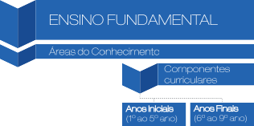
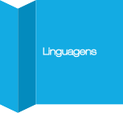

Base Nacional Comum Curricular & Base Nacional Comum
para a Formação Inicial
e Continuada de Professores da Educação Básica
Edição 2021
EDUCAÇÃO É A BASE
Sumário

Introdução à Base Nacional Comum Curricular | 13
Alguns Conceitos-Chave: o que são as chamadas Competências e Habilidades? | 25
A Estrutura da Base Nacional Comum Curricular | 29
As 10 Competências Gerais e Específicas da BNCC | 47
Introdução à Base Nacional Comum para Formação Inicial e Continuada de Professores da Educação Básica | 69
Conhecendo os Documentos | 75
Os Cursos de Licenciatura | 89
As Competências da BNC - Formação | 99
Conclusão | 107

Apresentação
Caro(a) Aluno(a),
Este livro, além de integrar os demais Materiais Didáticos disponíveis nos Cursos de Licenciaturas da FAEL, que também abordam as temáticas relacionadas com a BNCC e, no Currículo, com a BNC-Formação, tem como objetivo alcançar uma demanda que teve início lá em 2017, com o início das propostas de uma Base Nacional Comum Curricular (BNCC) que desse conta de abarcar os conteúdos a serem ensinados ao longo da Educação Básica (EB), ou seja, indo do Ensino Fundamental: Anos Iniciais (1º ao 5º ano), perpassando pela etapa do Ensino Fundamental: Anos Finais (6º ao 9º ano) até o Ensino Médio (1º ao 3º ano).
Nesse contexto, como você pode perceber, dada a importância da BNCC, ela deve estar articulada nos Currículos de Formação de Professores (FP), seja inicial ou continuada. Por exemplo, a BNC- Formação deve estar articulada nos Cursos de Licenciatura em Pedagogia, (que trabalha com a Educação Infantil e com o Ensino Fundamental: Anos Iniciais) e no caso das demais Licenciaturas (que trabalham com o Ensino Fundamental: Anos Finais e com o Ensino Médio).
Assim, as Diretrizes Curriculares Nacionais (DCNs) que norteiam as questões de regulamentação de ensino no Brasil, assim como a BNCC, é que em outubro de 2019 o Conselho Nacional de Educação (CNE), lançou o Parecer 22/20191 sobre as Diretrizes Curriculares Nacionais para a Formação Inicial de Professores para a Educação Básica e Base Nacional Comum para a Formação Inicial de Professores da Educação Básica (BNC-Formação).
Esses dois documentos são parte integrante da formação inicial e continuada de professores e que refletem no sujeito aprendente, uma vez que os professores têm de estar articulados com o que prediz a BNCC e também atualizados em relação ao que as diretrizes sugerem, visando, assim, uma formação integral que começa desde a formação
1 Disponível em: http://portal.mec.gov.br/index.php?option=com_docman&view=downloa- d&alias=133091-pcp022-19-3&category_slug=dezembro-2019-pdf&Itemid=30192. Acessado em: 31 mai. de 2020.

inicial, perpassando pela formação continuada e indo em direção à um processo de ensino-aprendizagem integral e atualizado.
No Brasil, desde 1985, educadores e pesquisadores, como Wanderley Geraldi (2002), vêm apontando a premência da realização de mudanças significativas no processo de ensino-aprendizagem na Educação Básica. A partir de então, diversas propostas curriculares começaram a ecoar no cenário Nacional por meio de Diretrizes Estaduais.
Em 1997, os Parâmetros Curriculares Nacionais (PCNs) foi considerado um marco para o sistema educacional – incorporaram algunsdessesplanos Estaduaiseapresentandoumredimensionamento para os fundamentos teórico-metodológicos vigentes. Nessa direção, o trabalho escolar só faz sentido se articulado aos usos sociais do conhecimento e, portanto, deve priorizar práticas permeadas por reflexões que de fato integrem o conhecimento aos seus respectivos usos sociais.
Passadas duas décadas da primeira publicação, muitas questões dos PCNs foram aprofundadas e elucidadas, fazendo surgir novas vozes e necessidades. Foi assim que, com a finalidade de complementar e de dialogar com as recomendações existentes, a BNCC, voltada para o Ensino Fundamental - Anos Iniciais e Finais (EF-AI/EF-AF), foi homologada em 20 de dezembro de 2017. Ao passo que a BNCC voltada ao Ensino Médio (EM) foi homologada em 14 de dezembro de 2018.
Já prevista pela Constituição Federal, pela Lei de Diretrizes e Bases (LDB), nas Diretrizes Curriculares Nacionais (DCNs) e no Plano Nacional da Educação (PNE) e construída colaborativamente, a BNCC objetiva ressignificar pressupostos e estabelecer conteúdos essenciais que os estudantes têm direito de aprender nas diferentes séries e áreas de conhecimento.
Entretanto, segundo o próprio documento, não se trata de um currículo pronto, mas de um alicerce ou um substrato para a sua elaboração: “(...) redes de ensino e instituições escolares públicas e particulares passam a ter uma referência nacional obrigatória para a elaboração ou adequação de seus currículos e propostas pedagógicas” (BRASIL, 2018, p. 5).
Percebe-se, todavia, que a BNCC já vem suscitando muitas outras dúvidas, indagações e críticas, sugerindo que o debate precisa continuar ou mesmo começar.
A BNCC propõe, então, a integração de práticas sociais que sejam dirigidas à realidade do sujeito, promovendo, assim, uma educação integral, preconizada pelo próprio documento, assentada em uma educação integral que pressupõe a atuação ativa do sujeito na sociedade.
Assim, esse livro foi pensada para você, estudante FAEL, para complementar seus estudos nessa trajetória acadêmica, para que você possa fazer uso dela para sanar suas dúvidas, fazer consultas, estudar e, para que você fique sempre atualizado. Esse livro não só se destina aos estudantes dos Cursos de Licenciatura da FAEL e do Brasil, mas, sim, para todos os estudantes ou profissionais da Educação que queiram saber mais sobre a Educação brasileira.
Nesse sentido, na primeira parte, você verá no Capítulo 1 o contexto da BNCC, para que você possa compreender seu surgimento e a necessidade de uma Base Comum; no Capítulo 2 você entenderá quais conceitos subsidiam a noção de Competência e de Habilidade e seus desdobramentos; no Capítulo 3, você vai ter conhecimento da estrutura desse documento, a fim de compreender a sua composição; já no Capítulo 4, elencaremos as 10 Competências Gerais e Específicas da Base e a articulação com as áreas das Licenciaturas.
Na segunda parte, o Capítulo 5 abordará o contexto dos documentos e diretrizes para a Formação de Professores, para que você possa compreender seu surgimento e a necessidade de uma Base Comum para Formação de Professores; no Capítulo 6 você entenderá as duas Resoluções; no Capítulo 7, você vai ter conhecimento da estrutura desse documento, a fim de compreender a sua composição nos Cursos de Licenciatura; já no Capítulo 8, elencaremos as Competências Gerais; por fim, no Capítulo 9, teceremos algumas conclusões sobre a BNCC e a BNC-Formação. Na sequência do último Capítulo você terá acesso aos Anexos com Links de acesso e QRCodes.
Este livro, então, pretende ser um guia, para que você, estudante da FAEL, possa compreender a real importância da BNCC e da
BNC-Formação e como esses documentos refletem nos seus conhecimentos adquiridos ao longo da sua formação. De forma didática, pretendemos expor algumas situações-problema para que você, futuro professor, professor – ou estudante de outro curso –, possa fazer reflexões reais.
De forma objetiva e clara, mas sobretudo critica, pretendemos, ainda, que você tenha acesso a esses conteúdos para ajudar você na hora de pensar um Plano de Aula ou de Ensino; na articulação do conteúdo que deseja trabalhar com seus estudantes ou no seu estágio, por exemplo; estabelecer relação das suas ações com a BNCC; possa compreender a real importância da BNC-Formação presente no Currículo do seu Curso de Licenciatura; pensar e refletir sobre sua prática docente; dentre muitas outras possibilidades que aqui tentamos comtemplar da forma mais atualizada possível para você.
Uma ótima leitura, bons estudos e que esse livro possa ser de grande ajuda para a sua formação acadêmica, profissional e também pessoal!

Parte 1
Capítulo 1
Introdução à Base Nacional Comum Curricular

Nesse Capítulo, perpassaremos por documentos e diretrizes de ensino brasileiras, tais como: Lei de Diretrizes e Bases (LDB), os Parâmetros Curriculares Nacionais, as Diretrizes Nacionais Curriculares, bem com outros documentos que se fazem necessá- rios para compreender a origem da Base Nacional Comum Curricular (BNCC). Também veremos os fundamentos que regem tal documento, seus pressupostos e qual seu objetivo. Nesse sentido, também se faz importante entender alguns conceitos-chave, como os de habilidades e competências preditos pela BNCC, e as demais nomenclaturas que irão nos acompanhar ao longo desse livro e que farão você compreen- der melhor a BNCC.
A Base Nacional Comum Curricular (BNCC) nasce de uma propos- ta já antiga no País: uma Base Comum que dê conta dos processos de ensino e aprendizagem nas escolas de todo o Brasil, perpassando todo o Ensino Básico (EB), contemplando desde o Ensino Infantil (EI) até o Ensino Médio (EM).
A discussão dessa Base Comum, denominada como Base Nacional Comum Curricular, está prevista na constituição de 1988, Artigo 210, do qual:
Art. 210. Serão fixados conteúdos mínimos para o ensino fun- damental, de maneira a assegurar formação básica comum e respeito aos valores culturais e artísticos, nacionais e regionais (BRASIL, 1988, s/p).
Posteriormente, a Lei de Diretrizes e Bases (LDB) de 1996, em seu Artigo 26, novamente suscita a discussão de uma Base Comum:
Art. 26. Os currículos da educação infantil, do ensino fundamental e do ensino médio devem ter base nacional comum, a ser complementada, em cada sistema de en- sino e em cada estabelecimento escolar, por uma parte diversificada, exigida pelas características regionais e locais da sociedade, da cultura, da economia e dos edu- candos (BRASIL, 1996, s/p).

Lembrando que esse Artigo sofreu alterações em sua redação por conta da Lei nº 12.796 de 2013, alterando a Lei nº 9.394 de 20 de de- zembro de 1996, que estabelece as diretrizes e bases da educação nacional, para dispor sobre a formação dos profissionais da educação e dar outras providências, referenciando, assim, à BNCC.
Na continuidade de documentos educacionais na história da educa- ção no Brasil, diante das normativas anteriores mencionadas, surgem, então, como um Marco Legal, os Parâmetros Curriculares Nacionais PCNs (1997; 1998; 2000; 2002) do 1º ao 5º (1º ao 4º) ano; do 6º ao 9º (5ª a 8ª) ano; do EM, com uma complementação em 2002, os PCNs+.
Posteriormente, as DCNs (2013) reforçam, em seu Artigo 14, uma Base Nacional Comum Curricular para toda a EB e a define como “co- nhecimentos, saberes e valores produzidos culturalmente, expressos nas políticas públicas (...)” (BRASIL, 2013, p. 67)1.
Em novembro de 2014, a BNCC entra no Plano Nacional de Educação (PNE)2, prevendo como estratégia: “pactuar entre União, Estados, Distrito Federal e Municípios, no âmbito da instância permanente de que trata o § 5º do art. 7º desta Lei, a implantação dos direitos e objetivos de aprendizagem e desenvolvimento que configurarão a base nacional co- mum curricular do ensino fundamental (BRASIL, 2014, s/p)”.
Assim, o PNE define a BNCC como estratégia para alcançar as
Metas 1, 2, 3 e 7, das quais:

Segundo as informações disponíveis no site do Movimento pela Base Nacional Comum Curricular (http://movimentopelabase.org.br/linha-do-tempo/), a partir das Diretrizes é que “foram elaborados os Parâmetros Curriculares Nacionais, com referências para cada discipli- na”, mas o que sabe-se é que o documento das DCNs é datado de 2013, ou seja, posterior aos PCNs, diferente do que está escrito no próprio site. O que contém é apenas uma Resolução de julho de 2010, referente às Diretrizes, segundo o site do Ministério da Educação (http://portal. mec.gov.br/dmdocuments/rceb004_10.pdf).
Lembrando que os Ministros da Educação, José Henrique Paim, Cid Gomes, Luiz Cláudio Costa (interino), fizeram parte do primeiro momento da proposta da BNCC, iniciado em 2014, até o lançamento público da primeira versão, em 2015. Posteriormente, os Ministros Renato Janine Ribeiro e Aloizio Mercadante, assumiram o cargo, respectivamente, dando continui- dade até maio de 2016, quando sai a segunda versão da BNCC. Já, posterior ao Golpe de Estado, Mendonça Filho e Rossieli Soares participaram da segunda, terceira e da versão final do documento.
Meta 1: universalizar, até 2016, a educação infantil na pré-escola para as crianças de 4 (quatro) a 5 (cinco) anos de idade e ampliar a oferta de educação infantil em creches de forma a atender, no mínimo, 50% (cinquenta por cento) das crianças de até 3 (três) anos até o final da vigência deste PNE;
Meta 2: universalizar o ensino fundamental de 9 (nove) anos para toda a população de 6 (seis) a 14 (quatorze) anos e garantir que pelo menos 95% (noventa e cinco por cento) dos alunos concluam essa etapa na idade recomendada, até o último ano de vigência deste PNE;
Meta 3: universalizar, até 2016, o atendimento escolar para toda a população de 15 (quinze) a 17 (dezessete) anos e elevar, até o final do período de vigência deste PNE, a taxa líquida de matrículas no ensino médio para 85% (oitenta e cinco por cento);
Meta 7: fomentar a qualidade da educação básica em todas as etapas e modalidades, com melhoria do fluxo escolar e da aprendizagem (BRASIL, 2014, s/p).
Em junho de 2015, o MEC institui (Portaria Nº 592), junto com o Conselho Nacional de Educação (CONSED) e a União Nacional dos Dirigentes Municipais de Educação (UNDIME), o grupo de redação responsável pela primeira versão da BNCC.
Em setembro do mesmo ano, tem-se a primeira versão3 e em ou- tubro é aberta ao público para contribuição. Em maio de 2016, sai, então, a segunda versão4, alterada, de acordo com as contribuições da sociedade. Segundo o site do Movimento pela Base Nacional Comum Curricular5, a consulta online da primeira versão é encerrada com mais de 12 milhões de contribuições da sociedade civil, profes- sores, escolas, organizações do terceiro setor e entidades científicas (BRASIL, 2017/18).
Disponível em: http://historiadabncc.mec.gov.br/documentos/BNCC-APRESENTACAO.pdf. 4 Disponível em: http://historiadabncc.mec.gov.br/documentos/bncc-2versao.revista.pdf.
O Movimento pela Base Nacional Comum é um grupo não governamental de profissionais da educação que desde 2013 atua para facilitar a construção de uma Base de qualidade. O grupo promove debates, produz estudos e pesquisas com gestores, professores e alunos e investiga casos de sucesso em vários países.
Em abril de 2017, surge a terceira versão da base. Em 20 de de- zembro é aprovada pelo Conselho Nacional de Educação (CNE) – aprova a Base por 20 votos a 3. Em 17 de dezembro é homologada pelo Ministro da Educação Mendonça Filho. E dia 06 de março de 2018 foi oficializado o dia D, dia oficial da implementação da BNCC.
Na continuidade, em 02 de abril de 2018 o Ministério da Educação entregou ao CNE a 3ª versão da BNCC voltada ao EM e em 14 de de- zembro de 2018, o Ministro da Educação, Rossieli Soares, homologou o referido documento.
Lembrando que as Orientações Curriculares Nacional para o Ensino Médio (OCNEM) foram modificadas, buscando atender ao Novo Ensino Médio no país, onde cada unidade escolar, em conso- nância com “(...) o sistema de ensino, deve estabelecer critérios pró- prios para que a organização curricular ofertada possibilite o desenvol- vimento das respectivas competências e habilidades” (BRASIL, 2018, p.4), sendo que essa organização deve ser garantida pelas competên- cias gerais e específicas da BNCC.
Esse processo de implementação, que se deu em meio a desafios históricos, como as diversas trocas de Ministros da Educação ao lon- go do processo de constituição desse documento e também de uma série de fatores de mudanças no país, está concebido com o apoio do MEC, liberando 100 milhões de reais para apoiar a adaptação dos currículos Municipais e Estaduais para adaptação da BNCC, segundo Maria Helena Guimarães, secretária-executiva do MEC, em entrevista ao Salto para o Futuro, em janeiro de 20186.
Assim, as premissas iniciais do documento, predizem que o referi- do é um “avanço para a educação brasileira (...) e estabelece com cla- reza o conjunto de aprendizagens essenciais e indispensáveis a que todos os estudantes, crianças, jovens e adultos, têm direito” (BRASIL, 2018, p. 6).

Disponível em: https://www.youtube.com/watch?v=jDtFOyYrpN4.

Com o intuito de “superar a fragmentação das políticas educacio- nais” (p. 8), a BNCC visa ser um norte aos demais currículos, como já mencionado, embora, sistematize conhecimentos comuns aos estu- dantes do País.
Nesse sentido, a Base não é (não objetiva ser) um currículo, ela é uma referência aos demais currículos dos Entes Federados, cujos esforços devem ser centralizados pelos Estados e Municípios na con- textualização dos conteúdos, de acordo com a realidade local.
Assim, para cada uma das redes de ensino e das instituições esco- lares, este será um documento valioso tanto para adequar ou construir seus currículos como para reafirmar o compromisso de todos com a redução das desigualdades educacionais no Brasil e a promoção da equidade e da qualidade das aprendizagens dos estudantes brasilei- ros (BRASIL, 2018, p. 5).
Portanto, a BNCC é um documento de caráter normativo que define um conjunto orgânico e progressivo de aprendizagens essenciais (BRASIL, 2018, p. 7, grifo do documento). Na BNCC a “competência é definida como a mobilização de conhecimen- tos (conceitos e procedimentos) habilidades (práticas, cognitivas e socioemocionais), atitudes e valores para resolver demandas complexas da vida cotidiana, do pleno exercício da cidadania do mundo do trabalho (p. 8, grifo do documento)”.
Ou seja, como o próprio documento aponta para uma “Educação Humana e Integral” (BRASIL, 2018, p. 7), num sentido de uma “Aprendizagem ao Longo da Vida”, como é sempre mencionado nas etapas da EB. Nesse sentido, a Educação foi cedendo o seu lugar à essa aprendizagem integral da qual o Documento se refere, à aqui- sição de competências e de habilidades, tendo em vista atingir ob- jetivos de crescimento econômico e de competitividade, de inclusão social e de cidadania, que são geralmente expressos através de lemas apresentados em estilo épico, consensual ou, mesmo, sem alternativa racional, e quase sempre com intuitos de justificação para colocar o país em destaque econômico.

Na sequência, de acordo com as normativas do documento, fala-
-se em regime de colaboração, ou seja, um regime colaborativo entre Estados e Municípios. Não seria, assim, um currículo único, pois as escolas podem colocar questões particulares, segundo aponta o pró- prio documento. A Base trabalha com aquilo que são as competências e habilidades que se quer desenvolver e chegar naquele determinado processo educacional, a forma como vai se chegar no desenvolvimen- to das competências e habilidades sugeridas pela BNCC, dos objeti- vos de aprendizagem etc., vai estar constando no currículo, ou seja, não é a Base que diz como isso irá acontecer.
Assim, em se tratando de um objetivo que propõe uma “educa- ção integral voltada ao acolhimento, reconhecimento e desenvolvi- mento pleno de todos os estudantes, com respeito às diferenças e enfrentamentos à discriminação e ao preconceito” (BRASIL, 2018,
p. 6). Essas competências e habilidades vão ser tratas no Capítulo 3 do livro.
Existe também uma Plataforma7 desenvolvida pelo MEC com vá- rios materiais de orientação para professores, pedagogos, diretores etc., um conjunto de materiais para a preparação das escolas, pois a proposta geral é que os Estados e os Municípios não tenham currí- culos diferenciados entre si pelos Estados, mas o Estado deve estar alinhado com esses Municípios, justificando “os mesmos direitos de aprendizagem” (BRASIL, 2018).
Nesse sentido, os Marcos Legais da BNCC citam o que Brasil (1988) aponta: “(...) o preparo para o exercício da cidadania e sua qua- lificação para o trabalho (p. 10)”. Conforme esses Marcos, a LDB, no Inciso IV de seu Artigo 9º, afirma que cabe à “União estabelecer, em colaboração com os Estados, o Distrito Federal e os Municípios, com- petências e diretrizes para a Educação Infantil, o Ensino Fundamental e o Ensino Médio, que nortearão os currículos e seus conteúdos (BRASIL, 1996, s/p)”, assegurando, assim, a EB comum.
Nesse artigo, a LDB deixa claros dois conceitos decisivos para todo o desenvolvimento da questão curricular no Brasil. O primeiro, já

Disponível em: http://basenacionalcomum.mec.gov.br.

antecipado pela Constituição, estabelece a relação entre o que é bási- co-comum e o que é diverso em matéria curricular: as competências e diretrizes são comuns, os currículos são diversos.
O segundo se refere ao foco do currículo. Ao dizer que os conteú- dos curriculares estão a serviço do desenvolvimento de competên- cias, a LDB orienta a definição das aprendizagens essenciais, e não apenas dos conteúdos mínimos a ser ensinados.
Essas são duas noções fundantes da BNCC:
A relação entre o que é básico-comum e o que é diverso é retomada no Artigo 26 da LDB, que determina que os currículos da Educação Infantil, do Ensino Fundamental e do Ensino Médio devem ter base nacional comum, a ser complementada, em cada sistema de ensino e em cada estabelecimento escolar, por uma parte diversifi- cada, exigida pelas características regionais e locais da sociedade, da cultura, da economia e dos educandos (BRASIL, 1996; ênfase adicionada). Essa orientação in- duziu à concepção do conhecimento curricular contextu- alizado pela realidade local, social e individual da escola e do seu alunado, que foi o norte das diretrizes curri- culares traçadas pelo Conselho Nacional de Educação (CNE) ao longo da década de 1990, bem como de sua revisão nos anos 2000. Em 2010, o CNE promulgou no- vas DCN, ampliando e organizando o conceito de con- textualização como “a inclusão, a valorização das dife- renças e o atendimento à pluralidade e à diversidade cultural resgatando e respeitando as várias manifesta- ções de cada comunidade”, conforme destaca o Parecer CNE/CEB no 7/2010 (BRASIL, 2018, p. 11).
Assim, a BNCC e os currículos se identificam na comunhão de princípios e valores que, como já mencionado, orientam a LDB e as DCNs. Dessa maneira, reconhecem que a Educação tem um compro- misso com a formação e o desenvolvimento “humano global, em suas dimensões intelectual, física, afetiva, social, ética, moral e simbólica (BRASIL, 2018, p. 12)”.
Nesse sentido, a Base é a Base, foi modificado para Educação é a Base. Nas duas versões anteriores não existia o debate sobre a

pedagogia das competências. Em sua terceira versão isso fica claro e consta claramente na Base o motivo da escolha dessa pedagogia das competências, que foi escolhida não por ser a mais moderna, mas por ser uma pesquisa do Centro de Estudos e Pesquisas em Educação, Cultura e Ação Comunitária (CENPEC), que afirma que a maioria dos estados que o CENPEC pesquisou usam a pedagogia das competências.
O conceito de competências adotado pela BNCC marca a discussão pedagógica e social das últimas décadas e pode ser inferido no texto da LDB – interessante, pois o texto da LDB que é mostrado é exatamente o que foi alterado pela lei 13.415/2017, sobre a reforma do EM.
No contexto de alteração, em 2017, da LDB, por força da lei 13.415/2017 a LDB passa, assim, a utilizar concomitantemente duas nomenclaturas (na realidade duas concepções) para se referir às fina- lidades da educação:
Art. 35-A. A Base Nacional Comum Curricular definirá direitos e objetivos de aprendizagem do ensino médio, conforme diretrizes do Conselho Nacional de Educação, nas seguintes áreas do conhecimento [...] Art. 36. § 1o A organização das áreas de que trata o caput e das respectivas competências e habilidades será feita de acordo com critérios estabelecidos em cada sistema de ensino (BRASIL, 2017; ênfases adicionadas). Trata-se, portanto, de maneiras diferentes e intercambiáveis para designar algo comum, ou seja, aquilo que os estudantes devem aprender na Educação Básica, o que inclui tanto os saberes quanto a capacidade de mobilizá-los e apli- cá-los (BRASIL, 2018, p. 12).
A pedagogia das competências se confunde com certa postura éti- co-social, de um ensino integral, onde,
(...) no novo cenário mundial, reconhecer-se em seu contexto histórico e cultural, comunicar-se, ser criativo, analítico-crítico, participativo, aberto ao novo, colaborati- vo, resiliente, produtivo e responsável requer muito mais do que o acúmulo de informações. Requer o desenvol- vimento de competências para aprender a aprender, saber lidar com a informação cada vez mais disponível,

atuar com discernimento e responsabilidade nos con- textos das culturas digitais, aplicar conhecimentos para resolver problemas, ter autonomia para tomar decisões, ser proativo para identificar os dados de uma situação e buscar soluções, conviver e aprender com as diferenças e as diversidades (BRASIL, 2018, p. 14).
Dessa forma, como se propõe o regime de colaboração:
A primeira tarefa de responsabilidade direta da União será a revisão da formação inicial e continuada dos professo- res para alinhá-las à BNCC. A ação nacional será crucial nessa iniciativa, já que se trata da esfera que responde pela regulação do ensino superior, nível no qual se prepara grande parte desses profissionais (BRASIL, 2018, p. 21).
As versões anteriores atestavam que o país é diverso, deveria se contemplar a diversidade regional etc., porém agora pretende alinhá-
-las. A ação nacional será crucial nessa iniciativa, já que se trata da esfera que responde pela regularização do Ensino Superior, nível que prepara grande parte desses profissionais.
Diante das evidências da relevância sobre os professores e dos demais membros da equipe escolar, para o sucesso dos alunos, essa é uma ação fundamental para implementação eficaz da BNCC já que as mudanças no cenário superior de educação terão impactos primor- diais para essa implementação, a começar pelos cursos de formação de professores.
Assim, o debate público se centrou nos conteúdos a serem desen- volvidos nos currículos. Houve mobilização forte de associações cien- tíficas, educadores, mas o processo participativo só é efetivo quando o poder público dá um retorno de porque determinadas questões foram aceitas e outras não8.
Assim, para quem é a BNCC? A título de desfecho de uma ca- racterização geral da BNCC enquanto novo9 documento norteador do

http://movimentopelabase.org.br/wp-content/uploads/2016/07/Análise-cr%C3%ADtica-1-1.pdf.
Novo no sentido de ser recém lançado, pois ele apenas (re)estrutura as noções de outros tantos documentos mencionados no livro, bem como dá um tom maior na estruturação do conhecimento e dos conteúdos das áreas.

ensino no Brasil, deixamos essa pergunta para vocês, estudante, re- fletir sobre o que aqui foi colocado. No Capítulo a seguir será exposto a estrutura da Base e seus desdobramentos, para que você possa ter um melhor entendimento do Documento.

Capítulo 2
Alguns Conceitos-Chave: o que são as chamadas
Competências e Habilidades?

Começando pela questão das Competências, na BNCC esse con- ceito é definido como a mobilização dos conhecimentos – conceitos e procedimentos –, habilidades – práticas –, atitudes e valores, que juntas auxiliam para resolver as demandas da vida cotidiana, pensan- do no pleno exercício da cidadania e do mundo do trabalho, reconhe- cendo que a “(...) educação deve afirmar valores e estimular ações que contribuam para a transformação da sociedade, tornando-a mais humana, socialmente justa e, também, voltada para a preservação da natureza” (BRASIL, 2018, p. 8).
Conhecimentos + Habilidades + Atitudes + Valores =
Competência
Nesse sentido, a Competência tem a ver com a resolução de pro- blemas, usando da capacidade, da habilidade e da aptidão que nós temos. E essa relação não envolve apenas a resolução de problemas para o mundo do trabalho, com já mencionado, mas, sim, para vida cotidiana, para as relações pessoais, socioemocionais.

Assim, a Competência objetiva desenvolver uma melhor tomada de decisão, de liderança, de resolução de problemas e a utili- zação dos conhecimentos que foram aprendidos ao longo do processo formativo.

O conceito de Competência pode ser bem confundido com o de Desempenho. O Desempenho é definido como um indicador da competência, ou orienta professores e gestores para saber se os alunos estão realmente desenvolvendo as competências.
Ao passo que para o conceito de Habilidade, ele está mais asso- ciado ao saber fazer, ou seja, uma ação física ou mental que evidencia a capacidade adquirida. Essas aptidões são desenvolvidas ao longo de cada etapa da Educação Básica e contribuem diretamente para o desenvolvimento das competências.

Faculdade Educacional da Lapa
Mas é importante entender que o aluno, ao obter um baixo desem- penho, não é necessariamente uma falta de competência. Temos que entender que existem fatores internos e externos ao processo de ensino aprendizagem, tais como: cansaço físico e mental do aluno quando vai fazer uma avaliação, se dormiu bem durante a noite, se se alimentou adequadamente etc. Então, para que o professor consiga avaliar o aluno em relação ao desenvolvimento das suas competências é importante pensar em um processo formativo, pois ao longo do seu processo esco- lar é que o seu desempenho deve ser levado em conta.
Mas e o noção de Habilidade? Vamos pensar que um sujeito está no segundo ano dos Anos Iniciais do Ensino Fundamental e vai apren- der a ler e a escrever. Depois do processo de ensino e aprendizagem ele acaba dominando esse processo. Assim, podemos dizer que ele apresenta habilidade de leitura e de escrita. O interessante é que com essas duas habilidades ele alcance o quê?
Naturalmente, a compreensão de um texto, a partir da leitura. Assim, caso ele domine a escrita e a leitura, mas não consiga com- preender textos, ele não será competente nesse domínio, certo? Com esse exemplo podemos definir Habilidade como: a aplicação de uma determinada competência com o objetivo de resolver uma situa- ção complexa.
É nesse sentido que a BNCC expõe as Competências Gerais e Específicas, a fim de que, com o processo de ensino e aprendizagem, os sujeitos consigam, por meio das habilidades desenvolvidas no ensi- no, ter a competência e usá-las no seu processo de vida, seja pessoal ou profissional.
Na Educação infantil temos os Campos de Experiência: eu, o outro e o nós; corpo, gestos e movimentos; traços, sons, cores e formas; escuta, fala, pensamento e imaginação; espaço, tempo, quantidades, relações e transformações, que articulam as habilidades para tal etapa do ensino.
No Ensino Fundamental – Anos Iniciais, temos as Unidades Temáticas e não são separadas por Áreas do Conhecimento, quais sejam: artes visuais, dança, música, teatro e artes integradas. No do- cumento é possível ver essas Competências separadas por Áreas do
27

Conhecimento – que no Ensino Fundamental: Anos Finais são elas: Linguagens, Matemática, Ciências da Natureza, Ciências Humanas e Ensino Religioso; no Ensino Médio temos: Linguagens e suas Tecnologias, Matemática e suas Tecnologias, Ciências da Natureza e suas Tecnologias e Ciências Humanas e Sociais Aplicadas.
Em cada Componente – entendido aqui como o que chamáva- mos de disciplina –, operam os Campos de Atuação – apenas para o Componente de Língua Portuguesa –, atuando como eixos organi- zadores propondo as Prática de Linguagens nos seguintes Campos: campo da vida pessoal, campo das práticas de estudo e pesqui- sa, campo jornalístico-midiático, campo de atuação na vida pública e o campo artístico-literário.
A organização das Práticas de Linguagem (leitura de textos, pro- dução de textos, oralidade e análise linguística/semiótica) nos Campos de Atuação, como os mencionados acima, “(...) aponta para a impor- tância da contextualização do conhecimento escolar, para a ideia de que essas práticas derivam de situações da vida social e, ao mesmo tempo, precisam ser situadas em contextos significativos para os estu- dantes (BRASIL, 2018, p. 82)”.
Na Língua Inglesa essas Práticas são chamadas de Eixos, tais quais: oralidade, leitura, escrita, conhecimentos linguísticos e dimen- são intercultural.
Já na Matemática e em outras Áreas, temos a seguinte nomencla- tura: Unidades Temáticas, que norteiam as habilidades a serem de- senvolvidas ao longo do Ensino Fundamental, por exemplo: números, álgebra, geometria, grandezas e medidas e probabilidade e estatística.
Dentro desses Campos de Atuação, Unidades Temáticas ou Eixos, nos temos os Objetos de Conhecimento que são os conteúdos a serem ensinados. E, por fim, as Habilidades.
É importante entender essas outras nomenclaturas para termos um melhor entendimento do que o documento nos traz. No Capítulo seguinte, vamos entenderemos a estrutura da BNCC e esses concei- tos ficarão visíveis, bem como em que parte eles parecem e qual a sua relação na estrutura da Educação Básica.

Capítulo 3
A Estrutura da Base Nacional Comum Curricular
Até aqui vimos questões relacionadas aos documentos para o en- sino que circulam no Brasil e vimos também os fundamentos e a ne- cessidade da criação da BNCC, bem como as Bases dessa Base. Vimos também as nomenclaturas que o documento traz e alguns con- ceitos-chave para propor um melhor entendimento. Aqui, veremos um pouco da estrutura que a BNCC nos traz para a organização das eta- pas da Educação Básica.
Começaremos, então, pela organização da Educação Infantil, con- forme segue a Imagem:
Figura 1: ESTRUTURA GERAL DA EDUCAÇÃO INFANTIL
FONTE: o autor (2021), adaptado de Brasil (2018, p. 25).

De acordo com essa estrutura, podemos entender como é feita a divisão nessa etapa da Educação Básica, entendo que ao longo des- sa Educação os estudantes devem desenvolver as dez Competências Gerais da Educação Básica, que serão vistas ao longo desse livro.
A estruturação da Educação Infantil tem que estar de acordo com os eixos estruturantes de interação e de brincadeira que se dão em cima dos Direitos de Aprendizagem, para que os sujeitos se desenvolvam e aprendam. Na sequência, temos os Campos de Experiências que servem para orientar a aprendizagem e o desen- volvimento das crianças.
Mas agora, o que vem a ser cada um desses componentes? Começamos pelo primeiro: os Direitos de Aprendizagem representam algumas maneiras pelas quais as crianças aprendem e que também devem ser seguidas para compor as diretrizes do trabalho pedagógico, ou seja, os professores dessa etapa devem se guiar pelos Direitos de Aprendizagem como norte para o seu planejamento, entendendo que esse planejamento vai desde a forma de organizar as crianças, as re- lações estabelecidas entre elas, entre os adultos e o seu espaço, bem como a materialidade, os cuidados pessoais, a gestão do tempo arti- culadas com a proposta do planejamento do professor; já os Campos de Experiências estão ligados às questões de desenvolvimento que devem ser trabalhadas durante essa etapa da Educação ; assim como os Objetivos de Aprendizagem e Desenvolvimento que devem pro- piciar amplo conhecimento, conceitos, habilidades e processos que as crianças adquirem nesse importante período de desenvolvimento.
Direitos de Aprendizagem Campos de Experiências
Objetivos de Aprendizagem e Desenvolvimento.
Assim, essa divisão, para fins estruturais, deve estar em constante complementação, ou seja, uma tem de estar articulada com a outra para que o objetivo de aprendizagem seja o mais concreto, viável e significativo possível

Vejamos agora quais são esses Direitos de Aprendizagem, confor- me a Imagem a seguir:
Tabela 1: DIREITOS DE APRENDIZAGEM PARA O ENSINO INFANTIL
Conviver | Com outras crianças e adultos, em pequenos e grandes gru- pos, utilizando diferentes linguagens, ampliando o conheci- mento de si e do outro, o respeito em relação à cultura e às diferenças entre as pessoas (BRASIL, 2018, p. 35). |
Brincar | Cotidianamente de diversas formas, em diferentes espa- ços e tempos, com diferentes parceiros (crianças e adul- tos), ampliando e diversificando seu acesso a produções culturais, seus conhecimentos, sua imaginação, sua criatividade, suas experiências emocionais, corporais, sensoriais, expressivas, cognitivas, sociais e relacionais (BRASIL, 2018, p. 35). |
Participar | Ativamente, com adultos e outras crianças, tanto do pla- nejamento da gestão da escola e das atividades propos- tas pelo educador quanto da realização das atividades da vida cotidiana, tais como a escolha das brincadeiras, dos materiais e dos ambientes, desenvolvendo diferentes linguagens e elaborando conhecimentos, decidindo e se posicionando (BRASIL, 2018, p. 35). |
Explorar | Movimentos, gestos, sons, formas, texturas, cores, pala- vras, emoções, transformações, relacionamentos, his- tórias, objetos, elementos da natureza, na escola e fora dela, ampliando seus saberes sobre a cultura, em suas diversas modalidades: as artes, a escrita, a ciência e a tecnologia (BRASIL, 2018, p. 35). |
Expressar | Como sujeito dialógico, criativo e sensível, suas necessi- dades, emoções, sentimentos, dúvidas, hipóteses, des- cobertas, opiniões, questionamentos, por meio de dife- rentes linguagens (BRASIL, 2018, p. 35). |
Conhecer-se | E construir sua identidade pessoal, social e cultural, constituindo uma imagem positiva de si e de seus grupos |
de pertencimento, nas diversas experiências de cuidados, interações, brincadeiras e linguagens vivenciadas na ins- tituição escolar e em seu contexto familiar e comunitário (BRASIL, 2018, p. 35). |
FONTE: o autor (2021), adaptado de Brasil (2018, p. 35).
Na sequência, veremos os Campos de Experiências e suas res- pectivas descrições, dos quais devem estar ligados a esses Direitos:
Tabela 2: CAMPOS DE EXPERIÊNCIA
CAMPO | DESCRIÇÃO |
TRAÇOS, SONS, CORES E FOMAS | Este campo destaca experiências nas quais as crianças tenham a oportunidade de perceber o ambiente como composto de TRAÇOS, SONS, CORES e FORMAS, ofe- recendo condições para sentirem a consistência da terra ou areia, criar misturas, colecionar coisas, modelar com argila, criar tintas, explorar formas coloridas, texturas, sabores, sons e também silêncios, em um espaço aco- lhedor, cheio de visualidades e sonoridades, promovendo o desenvolvimento da expressividade e da criatividade infantil e abrindo caminhos para o desenvolvimento de sua afetividade (BRASIL, 2018, p. 40). |
O EU, O OUTRO E O NÓS | Esse campo destaca experiências que possibilitem às crianças, na interação com outras crianças e adultos, viverem situações de atenção pessoal e outras práticas sociais, nas quais aprendem a se perceber como um EU, alguém que tem suas características, desejos, moti- vos, concepções, a considerar seus parceiros como um OUTRO, com seus desejos e interesses próprios, e a tomar consciência da existência de um NÓS, um grupo humano cada vez mais ampliado e diverso. Nesse pro- cesso, vão se constituindo como alguém com um modo próprio de agir, sentir e pensar. A ênfase neste campo |

CAMPO | DESCRIÇÃO |
de experiências está ligada à constituição de atitudes nas relações vividas ao longo de toda a permanência da criança na unidade de Educação Infantil, abrindo caminho para outras aprendizagens (BRASIL, 2018, p. 40). | |
CORPO, GESTOS E MOVIMENTOS | Esse campo destaca experiências nas quais o CORPO, os GESTOS e os MOVIMENTOS constituem linguagens das quais as crianças, desde cedo, fazem uso, e que as orientam em relação ao mundo. O referido campo des- taca experiências ricas e diversificadas, em que gestos, mímicas, posturas e movimentos expressivos constituem uma linguagem vital com a qual as crianças percebem e expressam emoções, reconhecem sensações, inte- ragem, brincam, ocupam espaços e neles se localizam, construindo conhecimento de si e do mundo. Destaca- -se também que a capacidade de nomear, identificar e ter consciência do próprio corpo, assim como a construção de uma autoimagem positiva, estão associadas às opor- tunidades oferecidas às crianças para expressão e conhe- cimento da cultura corporal da sociedade em que vivem (BRASIL, 2018, p. 40). |
ESCUTA, FALA, PENSAMENTO E IMAGINAÇÃO | Este campo ressalta experiências que evidenciam a estreita relação entre os atos de fala e escuta e a constituição da lin- guagem e do pensamento humano desde a infância. Desta- ca-se a experiência da criança com a linguagem verbal em diálogo com outras linguagens, desde o nascimento, de modo a ampliar não apenas essa linguagem, mas também o PENSAMENTO (sobre si, sobre o mundo, sobre a língua) e a IMAGINAÇÃO (BRASIL, 2018, p. 40). |
ESPAÇOS, TEM- POS, QUANTIDA- DES, RELAÇÕES E TRANSFOR- MAÇÕES | Neste campo, destacam-se experiências nas quais as crianças falam, descrevem, narram, explicam e fazem relações, requisitos fundamentais para a construção e ampliação de saberes. As vivências cotidianas delas na unidade — construir um castelo como cenário de um faz de conta, procurar um tatu-bola no jardim, cuidar de |

CAMPO | DESCRIÇÃO |
plantas e de animais, colecionar objetos, movimentar-se por diferentes espaços com diversos desafios, pensar sobre perguntas como: "Quanto tempo falta para o meu aniversário?", "Por que quando minha avó era criança não havia televisão?", "Por que alguns objetos afundam e outros não?", "Por que existem alguns animais com penas e outros com pelos?", "Quantas vezes um elefante é maior do que um cavalo?" —, além de fortalecerem sua autono- mia, podem ser ricas oportunidades para a construção do raciocínio lógico, de noções de ESPAÇO e TEMPO, QUAN- TIDADES, de classificações, seriações etc., para a percep- ção de RELAÇÕES e de TRANSFORMAÇÕES nas situações, objetos e materiais observados ou manuseados, e para o desenvolvimento da sua imaginação (BRASIL, 2018, p. 40). |
FONTE: o autor (2021).
Por fim, os Objetivos de Aprendizagem e Desenvolvimento es- tão ligados aos conteúdos e as Habilidades específicas preditas pela BNCC e que devem estar articulados com os Campos de Experiências e com a faixa etária de que cada etapa, nesse sentido, vejamos como interpretar a estrutura da BNCC no código de cada habilidade:
Figura 2: CÓDIGO DE IDENTIFICAÇÃO DA EDUCAÇÃO INFANTIL
FONTE: (BRASIL, 2018, p. 26)

Seguindo esse critério, o código do exemplo refere-se à etapa do Ensino Infantil, identificado pelas letras “EI”, seguido do número “02”, que significa a faixa etária. As letras “TS” indica o Campo de Experiência, como visto mais acima e o último conjunto de números, “01”, identifica o número final da habilidade a que se destina.
Na sequência dos debates, a próxima etapa da Educação Básica é o Ensino Fundamental. Também começaremos elucidando, pela Imagem a seguir, como se dá a estrutura nessa etapa.
Figura 3: ESTRUTURA GERAL DO ENSINO FUNDAMENTAL
FONTE: o autor (2021), adaptado de Brasil (2018, p. 28).
Condizente ao Ensino Fundamental, seja ele Anos Iniciais ou Finais, cada Área do Conhecimento estabelece relação com as Competências Específicas da Área, que deve ser distribuído ao lon- go de nove anos. Essas Competências são um afunilamento das Competências Gerais, pensando, de forma particular, em cada etapa de ensino e em cada conjunto de conteúdos que devem ser ensinados

ao longo da Educação Básica – lembrando que as Competências Gerais da BNCC serão visitadas ao longo desse livro.
Assim, passamos agora para estrutura geral das Áreas do Ensino Fundamental, com a Imagem que segue:
Figura 4: ESTRUTURA GERAL DAS ÁREAS DO ENSINO FUNDAMENTAL


FONTE: o autor (2021), adaptado de Brasil (2018, p. 27).

Dentro dessa estrutura, temos as Áreas do Conhecimento de: Linguagens, Matemática, Ciências da Natureza, Ciências Humanas e Ensino Religioso. Dentro dessas Áreas estão as disciplinas, ou seja, os Componentes Curriculares, que percorrerão ao longo de cada eta- pa. Notando que a Língua Inglesa tem início a partir do 6º ano.
Assim como na etapa da Educação Infantil, o Ensino Fundamental também apresenta um esquema para interpretação dos códigos e possibilitar a identificação das habilidades, como veremos:
Figura 5: CÓDIGO DE IDENTIFICAÇÃO DO ENSINO FUNDAMENTAL
FONTE: Brasil (2018, p. 30).
Assim, seguindo esse critério, o código “EF67EF01, por exemplo, refere-se à primeira habilidade proposta em Educação Física no bloco relativo ao 6o e 7o anos, enquanto o código EF04MA10 indica a déci- ma habilidade do 4º ano de Matemática” (BRASIL, 2018, p. 30).
No Ensino Fundamental, seja nos Anos Iniciais e nos Finais as áreas são contempladas pela seguinte estrutura:

Tabela 3: Área de Linguagens
LINGUAGENS | |
Competências Específicas da Área | |
LÍNGUA PORTUGUESA | ARTE |
Competências Específicas de Componente | Competências Específicas de Componente |
Campos de Atuação | Unidades Temáticas |
Práticas de Linguagem | Unidades Temáticas |
Objetos de Conhecimento | Objetos de Conhecimento |
Habilidades | Habilidades |
EDUCAÇÃO FÍSICA | LÍNGUA INGLESA |
Competências Específicas de Componente | Competências Específicas de Componente |
Unidades Temáticas | Eixo |
Objetos de Conhecimento | Objetos de Conhecimento |
Habilidades | Habilidades |
MATEMÁTICA |
Competências Específicas da Área |
MATEMÁTICA |
Competências Específicas de Componente |
Unidades Temáticas |
Objetos de Conhecimento |
Habilidades |

CIÊNCIAS DA NATUREZA |
Competências Específicas da Área |
CIÊNCIAS |
Competências Específicas de Componente |
Unidades Temáticas |
Objetos de Conhecimento |
Habilidades |
CIÊNCIAS HUMANAS | |
Competências Específicas da Área | |
GEOGRAFIA | HISTÓRIA |
Competências Específicas de Componente | Competências Específicas de Componente |
Unidades Temáticas | Unidades Temáticas |
Objetos de Conhecimento | Objetos de Conhecimento |
Habilidades | Habilidades |
ENSINO RELIGIOSO |
Competências Específicas da Área |
ENSINO RELIGIOSO |
Competências Específicas de Componente |
Unidades Temáticas |
Objetos de Conhecimento |
Habilidades |
FONTE: o autor (2021).

Entendendo aqui, que o nós chamávamos antes de “Disciplina”, agora, com a BNCC, temos uma nova nomenclatura, qual seja: Componente, como vimos no Capítulo anterior. Você deve ter percebido essa oscilação ao longo do livro, mas é isso mesmo, com a chegada da BNCC, algumas nomenclaturas que conhecemos foram alteradas.
No Ensino Médio, a organização se dá em quatro grandes Áreas, conforme Imagem a seguir:
Figura 6: ESTRUTURA GERAL DO ENSINO MÉDIO

FONTE: o autor, adaptado de Brasil (2018, p. 33).
A estrutura do Ensino Médio na BNCC objetiva que os estudantes tenham o direito de aprender o que é essencial para seguir seu cami- nho na vida social, ou seja, depois da escola. É nesse sentido que, por meio da BNCC, sejam garantidas as aprendizagens comuns e obriga- tórias e que essas aprendizagens estejam conectadas às competên- cias preditas pelo próprio Documento, a fim de preparar os jovens para a vida. A BNCC acaba por orientar, assim, os currículos, a formação de professores e o ENEM.


Figura 7: ESTRUTURA GERAL DAS ÁREAS DO ENSINO MÉDIO
FONTE: o autor, adaptado de Brasil (2018, p. 32).
Segundo o Documento,
Essas áreas, como bem aponta o Parecer CNE/ CEB no 11/2010, “favorecem a comunicação entre os

conhecimentos e saberes dos diferentes componentes curriculares” (BRASIL, 2010). Elas se intersectam na formação dos alunos, embora se preservem as especi- ficidades e os saberes próprios construídos e sistemati- zados nos diversos componentes (BRASIL, 2018, p. 27, grifo do Documento).
Dessa forma, em cada Área são estabelecidas Competências Específicas – que vocês vão ver no Anexo deste livro –, objetivando desenvolvê-las ao longo dos nove anos, no EF-AF, e dos três anos, no EM. Entendendo assim, como você já viu anteriormente, a articulação entre toda a estrutura proposta pela BNCC, para
(...) garantir o desenvolvimento das competências es- pecíficas, cada componente curricular apresenta um conjunto de habilidades. Essas habilidades estão rela- cionadas a diferentes objetos de conhecimento – aqui entendidos como conteúdos, conceitos e processos –, que, por sua vez, são organizados em unidades temáti- cas (BRASIL, 2018, p. 28, grifos do documento).
Respeitando as muitas possibilidades de organização do conheci- mento escolar, as Unidades Temáticas definem um arranjo dos Objetos de Conhecimento (conteúdos) ao longo do EF adequado as especi- ficidades dos Componentes Curriculares. Cada Unidade Temática contempla uma gama maior ou menor de Objetos de Conhecimento, assim como cada Objeto de Conhecimento se relaciona a um número variável de habilidades.
Os critérios de organização das habilidades do documento, repre- sentam apenas ideias, entre outras, pois os agrupamentos propos- tos não devem ser obrigatórios aos currículos dos entes federados. Apenas serve como um guia, claro e preciso do que se espera do aprendizado na EB.
Um esquema proposto pela BNCC, assegura as Unidades Temáticas, os Objetos de Conhecimento e as Habilidades definidas para cada ano, ou bloco de anos. Assim, as habilidades são identifica- das por um código alfanumérico, como na Imagem a seguir:

Figura 8: CÓDIGO DE IDENTIFICAÇÃO DO ENSINO MÉDIO
FONTE: Brasil (2018, p. 34).
Por exemplo, o código EM13LGG103 refere-se à terceira habilidade proposta na área de Linguagens e suas Tecnologias relacionada à com- petência específica 1, “(...) que pode ser desenvolvida em qualquer série do Ensino Médio, conforme definições curriculares” (BRASIL, 2018, p. 34).
Agora, no Ensino Médio, nós temos quatro grandes Áreas, como podemos ver abaixo:
Tabela 4: AS ÁREAS DO ENSINO MÉDIO
Linguagens e suas Tecnologias | Matemática e suas Tecnologias |
Competências Específicas | Competências Específicas |
HABILIDADES DA ÁREA | HABILIDADES DA ÁREA |
Ciências da Natureza e suas Tecnologias | Ciências Humanas e Sociais Aplicadas |
Competências Específicas | Competências Específicas |
HABILIDADES DA ÁREA | HABILIDADES DA ÁREA |
FONTE: o autor (2021).

Para o EM o Documento não levanta nenhuma indicação de conteúdo, ficando a critério da proposta do Novo Ensino Médio (NEM). Lembrando que as Orientações Curriculares Nacional para o Ensino Médio (OCNEM) foram modificadas, buscando atender ao Novo Ensino Médio no país, onde cada unidade escolar, em consonância com “(...) o sistema de ensi- no, deve estabelecer critérios próprios para que a organização curricular ofertada possibilite o desenvolvimento das respectivas competências e habilidades” (BRASIL, 2018, p.4), sendo que essa organização deve ser garantida pelas Cmpetências Gerais e específicas da BNCC.
Como vimos, no EM os currículos são compostos pela formação geral básica, articulada aos itinerários formativos como um todo in- dissociável, nos termos das Diretrizes Curriculares Nacionais para o Ensino Médio de 2018, o Novo Ensino Médio.1 Conforme o Artigo 1 e 2, a BNCC não prediz conteúdos, como no caso do EF-AF:
§ 1o Atendidos todos os direitos e objetivos de aprendi- zagem instituídos na Base Nacional Comum Curricular (BNCC), as instituições e redes de ensino podem adotar formas de organização e propostas de progressão que julgarem pertinentes ao seu contexto, no exercício de sua autonomia, na construção de suas propostas curri- culares e de suas identidades (BRASIL, 2019, s/p.).
Assim, o Novo Ensino Médio representa uma reforma na estrutura do atual sistema de ensino do país2. De acordo com o MEC, o objetivo é aproximar os alunos das transformações do mercado de trabalho, possibilitando uma formação mais atualizada.
A principal proposta da reforma do EM é estabelecer uma estru- tura curricular comum a todas as escolas, que será definida através da Base, e outra mais flexível, organizada pelo estudante. Ainda, se- gundo o MEC, isso possibilitará maior autonomia para os alunos defi- nirem os rumos da sua educação, de acordo com os seus interesses e afinidades pessoais.

1 Segundo o Parecer 3, de 8 de novembro de 2018, o documento atualiza as Diretrizes Curriculares Nacionais para o Ensino Médio, observadas as alterações introduzidas na LDB pela Lei no 13.415/2017.Disponívelem:<http://portal.mec.gov.br/index.php?option=com_docman&view=- download&alias=102311 -pceb003-18&category_slug=novembro-2018-pdf&Itemid=30192>. 2 Questões sobre o Novo Ensino Médio podem ser acessadas em: http://novoensinomedio. mec.gov.br/#!/pagina-inicial.

Capítulo 4
As 10 Competências Gerais e Específicas da BNCC

Como vimos até aqui, já podemos entender como funciona a BNCC e qual o seu objetivo. Entendemos como funciona a sua estrutura e como ela pode ser pensada, visando a especificidade de cada Escola. A sua estrutura molda, até certo ponto, o funcionamento do sistema educacional brasileiro a partir da BNCC. Para isso, vamos entender agora como funcionam as Competências que tanto falamos e como elas são representadas nas Áreas das Licenciaturas.
As Competências Gerais da EB propostas pela BNCC (BRASIL, 2018, p. 9-10), são demonstradas na Imagem que segue:
Tabela 1: COMPETÊNCIAS GERAIS DA EDUCAÇÃO BÁSICA
Valorizar e utilizar os conhecimentos historicamente construídos sobre o mundo físico, social, cultural e digital para entender e explicar a realidade, continuar aprendendo e colaborar para a construção de uma sociedade justa, democrática e inclusiva. |
"Exercitar a curiosidade intelectual e recorrer à abordagem própria das ciên- cias, incluindo a investigação, a reflexão, a análise crítica, a imaginação e a criatividade, para investigar causas, elaborar e testar hipóteses, formular e resolver problemas e criar soluções (inclusive tecnológicas) com base nos conhecimentos das diferentes áreas." |
Valorizar e fruir as diversas manifestações artísticas e culturais, das locais às mun- diais, e também participar de práticas diversificadas da produção artístico-cultural. |
Utilizar diferentes linguagens – verbal (oral ou visual-motora, como Libras, e escrita), corporal, visual, sonora e digital –, bem como conhecimentos das linguagens artística, matemática e científica, para se expressar e partilhar informações, experiências, ideias e sentimentos em diferentes contextos e produzir sentidos que levem ao entendimento mútuo. |
Compreender, utilizar e criar tecnologias digitais de informação e comuni- cação de forma crítica, significativa, reflexiva e ética nas diversas práticas sociais (incluindo as escolares) para se comunicar, acessar e disseminar informações, produzir conhecimentos, resolver problemas e exercer prota- gonismo e autoria na vida pessoal e coletiva. |

Valorizar a diversidade de saberes e vivências culturais e apropriar-se de conhecimentos e experiências que lhe possibilitem entender as relações pró- prias do mundo do trabalho e fazer escolhas alinhadas ao exercício da cida- dania e ao seu projeto de vida, com liberdade, autonomia, consciência crítica e responsabilidade. |
Argumentar com base em fatos, dados e informações confiáveis, para for- mular, negociar e defender ideias, pontos de vista e decisões comuns que respeitem e promovam os direitos humanos, a consciência socioambiental e o consumo responsável em âmbito local, regional e global, com posicio- namento ético em relação ao cuidado de si mesmo, dos outros e do planeta. |
Conhecer-se, apreciar-se e cuidar de sua saúde física e emocional, compre- endendo-se na diversidade humana e reconhecendo suas emoções e as dos outros, com autocrítica e capacidade para lidar com elas. |
"Exercitar a empatia, o diálogo, a resolução de conflitos e a cooperação,- fazendo-se respeitar e promovendo o respeito ao outro e aos direitos humanos, com acolhimento e valorização da diversidade de indivíduos e de grupos sociais, seus saberes, identidades, culturas e potencialidades, sem preconceitos de qualquer natureza." |
Agir pessoal e coletivamente com autonomia, responsabilidade, flexibilidade, resiliência e determinação, tomando decisões com base em princípios éticos, democráticos, inclusivos, sustentáveis e solidários. |
FONTE: o autor (2021), adaptado de Brasil (2018, p. 9-10).
Na Educação Infantil, como já vimos, o que a BNCC nos traz são os Direitos de Aprendizagem e os Campos de Experiências, uma vez que como é a primeira etapa da EB, a
“(...) entrada na creche ou na pré-escola significa, na maioria das vezes, a primeira separação das crianças dos seus vínculos afetivos familiares para se incorporarem a uma situação de socialização estruturada. Nas últimas décadas, vem se consolidando, na Educação Infantil, a concepção que vincula educar e cuidar, entendendo o

cuidado como algo indissociável do processo educativo. Nesse contexto, as creches e pré-escolas, ao acolher as vivências e os conhecimentos construídos pelas crianças no ambiente da família e no contexto de sua comunida- de, e articulá-los em suas propostas pedagógicas, têm o objetivo de ampliar o universo de experiências, conheci- mentos e habilidades dessas crianças, diversificando e consolidando novas aprendizagens, atuando de maneira complementar à educação familiar – especialmente quan- do se trata da educação dos bebês e das crianças bem pequenas, que envolve aprendizagens muito próximas aos dois contextos (familiar e escolar), como a socializa- ção, a autonomia e a comunicação (BRASIL, 2018, p. 36).
Assim, a transição entre a etapa da Educação Infantil para o Ensino Fundamental requer atenção para que exista equilíbrio nas mudanças propostas pela Base, para garantir a integração e a continuação do processo de aprendizagem das crianças. Por isso é necessário pen- sar não apenas em competências e habilidades para que as crianças se desenvolvam, mas, sim, no seu processo formativo enquanto sujei- to, ao passo que depois da EI, as competências especificas e habili- dades são inseridas de maneira articulada e progressiva, garantindo o desenvolvimento da criança na transição dessas etapas de ensino.
A Área das Linguagens, para o Ensino Fundamental – Anos Iniciais e Finais, compreende os Componentes: Língua Portuguesa, Arte, Educação Física e Língua Inglesa (apenas do 6º ao 9º ano), como veremos na Imagem que segue:
Tabela 2: AS COMPETÊNCIAS ESPECÍFICAS DE LINGUAGENS
Compreender as linguagens como construção humana, histórica, social e cultural, de natureza dinâmica, reconhecendo-as e valorizando-as como for- mas de significação da realidade e expressão de subjetividades e identidades sociais e culturais. |

Conhecer e explorar diversas práticas de linguagem (artísticas, corporais e lin- guísticas) em diferentes campos da atividade humana para continuar apren- dendo, ampliar suas possibilidades de participação na vida social e colaborar para a construção de uma sociedade mais justa, democrática e inclusiva. |
Utilizar diferentes linguagens – verbal (oral ou visual-motora, como Libras, e escrita), corporal, visual, sonora e digital –, para se expressar e partilhar infor- mações, experiências, ideias e sentimentos em diferentes contextos e produzir sentidos que levem ao diálogo, à resolução de conflitos e à cooperação. |
Utilizar diferentes linguagens para defender pontos de vista que respeitem o outro e promovam os direitos humanos, a consciência socioambiental e o consumo responsável em âmbito local, regional e global, atuando critica- mente frente a questões do mundo contemporâneo. |
Desenvolver o senso estético para reconhecer, fruir e respeitar as diversas manifestações artísticas e culturais, das locais às mundiais, inclusive aquelas pertencentes ao patrimônio cultural da humanidade, bem como participar de práticas diversificadas, individuais e coletivas, da produção artístico-cultural, com respeito à diversidade de saberes, identidades e culturas. |
Compreender e utilizar tecnologias digitais de informação e comunicação de forma crítica, significativa, reflexiva e ética nas diversas práticas sociais (incluindo as escolares), para se comunicar por meio das diferentes lingua- gens e mídias, produzir conhecimentos, resolver problemas e desenvolver projetos autorais e coletivos. |
FONTE: o autor (2021), adaptado de Brasil (2018, p. 65).
Tabela 3: AS COMPETÊNCIAS ESPECÍFICAS DO COMPONENTE DE LÍNGUA PORTUGUESA
Reconhecer o texto como lugar de manifestação e negociação de sentidos, valores e ideologias. |
"Compreender a língua como fenômeno cultural, histórico, social, vari- ável, heterogêneo e sensível aos contextos de uso, reconhecendo-a como meio de construção de identidades de seus usuários e da comunidade a que pertencem." |
Apropriar-se da linguagem escrita, reconhecendo-a como forma de interação nos diferentes campos de atuação da vida social e utilizando-a para ampliar |
suas possibilidades de participar da cultura letrada, de construir conhecimen- tos (inclusive escolares) e de se envolver com maior autonomia e protago- nismo na vida social. |
Ler, escutar e produzir textos orais, escritos e multissemióticos que circulam em diferentes campos de atuação e mídias, com compreensão, autonomia, fluência e criticidade, de modo a se expressar e partilhar informações, expe- riências, ideias e sentimentos, e continuar aprendendo. |
Compreender o fenômeno da variação linguística, demonstrando atitude res- peitosa diante de variedades linguísticas e rejeitando preconceitos linguísticos. |
Empregar, nas interações sociais, a variedade e o estilo de linguagem adequa- dos à situação comunicativa, ao(s) interlocutor(es) e ao gênero do discurso/ gênero textual. |
Analisar informações, argumentos e opiniões manifestados em interações sociais e nos meios de comunicação, posicionando-se ética e criticamente em relação a conteúdos discriminatórios que ferem direitos humanos e ambientais. |
Selecionar textos e livros para leitura integral, de acordo com objetivos, inte- resses e projetos pessoais (estudo, formação pessoal, entretenimento, pes- quisa, trabalho etc.). |
Envolver-se em práticas de leitura literária que possibilitem o desenvolvi- mento do senso estético para fruição, valorizando a literatura e outras mani- festações artístico-culturais como formas de acesso às dimensões lúdicas, de imaginário e encantamento, reconhecendo o potencial transformador e humanizador da experiência com a literatura. |
Mobilizar práticas da cultura digital, diferentes linguagens, mídias e ferra- mentas digitais para expandir as formas de produzir sentidos (nos processos de compreensão e produção), aprender e refletir sobre o mundo e realizar diferentes projetos autorais. |
FONTE: o autor (2021), adaptado de Brasil (2018, p. 87).
Tabela 4: AS COMPETÊNCIAS ESPECÍFICAS DO COMPONENTE DE ARTE
Explorar, conhecer, fruir e analisar criticamente práticas e produções artísti- cas e culturais do seu entorno social, dos povos indígenas, das comunidades |

tradicionais brasileiras e de diversas sociedades, em distintos tempos e espa- ços, para reconhecer a arte como um fenômeno cultural, histórico, social e sensível a diferentes contextos e dialogar com as diversidades. |
"Compreender as relações entre as linguagens da Arte e suas práticas integradas, inclusive aquelas possibilitadas pelo uso das novas tecnologias de informação e comunicação, pelo cinema e pelo audiovisual, nas condições particulares de produção, na prática de cada linguagem e nas suas articulações." |
Pesquisar e conhecer distintas matrizes estéticas e culturais – especialmente aquelas manifestas na arte e nas culturas que constituem a identidade brasi- leira –, sua tradição e manifestações contemporâneas, reelaborando-as nas criações em Arte. |
Experienciar a ludicidade, a percepção, a expressividade e a imaginação, res- significando espaços da escola e de fora dela no âmbito da Arte. |
Mobilizar recursos tecnológicos como formas de registro, pesquisa e criação artística. |
Estabelecer relações entre arte, mídia, mercado e consumo, compreendendo, de forma crítica e problematizadora, modos de produção e de circulação da arte na sociedade. |
Problematizar questões políticas, sociais, econômicas, científicas, tecnológi- cas e culturais, por meio de exercícios, produções, intervenções e apresen- tações artísticas. |
Desenvolver a autonomia, a crítica, a autoria e o trabalho coletivo e colabo- rativo nas artes. |
Analisar e valorizar o patrimônio artístico nacional e internacional, material e imaterial, com suas histórias e diferentes visões de mundo. |
FONTE: o autor (2021), adaptado de Brasil (2018, p. X).
Tabela 5: AS COMPETÊNCIAS ESPECÍFICAS DO COMPONENTE DE EDUCAÇÃO FÍSICA
Compreender a origem da cultura corporal de movimento e seus vínculos com a organização da vida coletiva e individual. |
Planejar e empregar estratégias para resolver desafios e aumentar as pos- sibilidades de aprendizagem das práticas corporais, além de se envolver no processo de ampliação do acervo cultural nesse campo. |

Refletir, criticamente, sobre as relações entre a realização das práticas corporais e os processos de saúde/doença, inclusive no contexto das atividades laborais. |
Identificar a multiplicidade de padrões de desempenho, saúde, beleza e esté- tica corporal, analisando, criticamente, os modelos disseminados na mídia e discutir posturas consumistas e preconceituosas. |
Identificar as formas de produção dos preconceitos, compreender seus efei- tos e combater posicionamentos discriminatórios em relação às práticas cor- porais e aos seus participantes. |
Interpretar e recriar os valores, os sentidos e os significados atribuídos às diferentes práticas corporais, bem como aos sujeitos que delas participam. |
Reconhecer as práticas corporais como elementos constitutivos da identi- dade cultural dos povos e grupos. |
Usufruir das práticas corporais de forma autônoma para potencializar o envolvimento em contextos de lazer, ampliar as redes de sociabilidade e a promoção da saúde. |
Reconhecer o acesso às práticas corporais como direito do cidadão, pro- pondo e produzindo alternativas para sua realização no contexto comunitário. |
Experimentar, desfrutar, apreciar e criar diferentes brincadeiras, jogos, dan- ças, ginásticas, esportes, lutas e práticas corporais de aventura, valorizando o trabalho coletivo e o protagonismo. |
FONTE: o autor (2021), adaptado de Brasil (2018, p. X).
Tabela 6: AS COMPETÊNCIAS ESPECÍFICAS DO COMPONENTE DE LÍNGUA INGLESA
Identificar o lugar de si e o do outro em um mundo plurilíngue e multicultural, refletindo, criticamente, sobre como a aprendizagem da língua inglesa con- tribui para a inserção dos sujeitos no mundo globalizado, inclusive no que concerne ao mundo do trabalho. |
Comunicar-se na língua inglesa, por meio do uso variado de linguagens em mídias impressas ou digitais, reconhecendo-a como ferramenta de acesso ao conhecimento, de ampliação das perspectivas e de possibilidades para a compreensão dos valores e interesses de outras culturas e para o exercício do protagonismo social. |

Identificar similaridades e diferenças entre a língua inglesa e a língua materna/ outras línguas, articulando-as a aspectos sociais, culturais e identitários, em uma relação intrínseca entre língua, cultura e identidade. |
Elaborar repertórios linguístico-discursivos da língua inglesa, usados em diferentes países e por grupos sociais distintos dentro de um mesmo país, de modo a reconhecer a diversidade linguística como direito e valorizar os usos heterogêneos, híbridos e multimodais emergentes nas sociedades contemporâneas. |
Utilizar novas tecnologias, com novas linguagens e modos de interação, para pesquisar, selecionar, compartilhar, posicionar-se e produzir sentidos em prá- ticas de letramento na língua inglesa, de forma ética, crítica e responsável. |
Conhecer diferentes patrimônios culturais, materiais e imateriais, difundidos na língua inglesa, com vistas ao exercício da fruição e da ampliação de pers- pectivas no contato com diferentes manifestações artístico-culturais. |
FONTE: o autor (2021), adaptado de Brasil (2018, p. X).
Igualmente para o Ensino Fundamental Anos Iniciais e Finais, compreendendo o Componente: Matemática, como podemos ver na Imagem que segue:
Tabela 7: AS COMPETÊNCIAS ESPECÍFICAS DE MATEMÁTICA
Reconhecer que a Matemática é uma ciência humana, fruto das necessidades e preocupações de diferentes culturas, em diferentes momentos históricos, e é uma ciência viva, que contribui para solucionar problemas científicos e tec- nológicos e para alicerçar descobertas e construções, inclusive com impac- tos no mundo do trabalho. |
Desenvolver o raciocínio lógico, o espírito de investigação e a capacidade de produzir argumentos convincentes, recorrendo aos conhecimentos matemá- ticos para compreender e atuar no mundo. |
Compreender as relações entre conceitos e procedimentos dos diferen- tes campos da Matemática (Aritmética, Álgebra, Geometria, Estatística e |

Probabilidade) e de outras áreas do conhecimento, sentindo segurança quanto à própria capacidade de construir e aplicar conhecimentos matemá- ticos, desenvolvendo a autoestima e a perseverança na busca de soluções. |
Fazer observações sistemáticas de aspectos quantitativos e qualitativos pre- sentes nas práticas sociais e culturais, de modo a investigar, organizar, repre- sentar e comunicar informações relevantes, para interpretá-las e avaliá-las crítica e eticamente, produzindo argumentos convincentes. |
Utilizar processos e ferramentas matemáticas, inclusive tecnologias digi- tais disponíveis, para modelar e resolver problemas cotidianos, sociais e de outras áreas de conhecimento, validando estratégias e resultados. |
Enfrentar situações-problema em múltiplos contextos, incluindo-se situa- ções imaginadas, não diretamente relacionadas com o aspecto prático-utili- tário, expressar suas respostas e sintetizar conclusões, utilizando diferentes registros e linguagens (gráficos, tabelas, esquemas, além de texto escrito na língua materna e outras linguagens para descrever algoritmos, como fluxo- gramas, e dados). |
Desenvolver e/ou discutir projetos que abordem, sobretudo, questões de urgência social, com base em princípios éticos, democráticos, sustentáveis e solidários, valorizando a diversidade de opiniões de indivíduos e de grupos sociais, sem preconceitos de qualquer natureza. |
Interagir com seus pares de forma cooperativa, trabalhando coletiva- mente no planejamento e desenvolvimento de pesquisas para responder a questionamentos e na busca de soluções para problemas, de modo a identificar aspectos consensuais ou não na discussão de uma determi- nada questão, respeitando o modo de pensar dos colegas e aprendendo com eles. |
FONTE: o autor (2021), adaptado de Brasil (2018, p. X).
A Área das Ciências da Natureza, para o Ensino Fundamental Anos Iniciais e Finais, compreende o Componente: Ciências, como veremos na Imagem que segue:

Tabela 8: AS COMPETÊNCIAS ESPECÍFICAS DE CIÊNCIAS DA NATUREZA
Compreender as Ciências da Natureza como empreendimento humano, e o conhecimento científico como provisório, cultural e histórico. |
Compreender conceitos fundamentais e estruturas explicativas das Ciências da Natureza, bem como dominar processos, práticas e procedimentos da investi- gação científica, de modo a sentir segurança no debate de questões científicas, tecnológicas, socioambientais e do mundo do trabalho, continuar aprendendo e colaborar para a construção de uma sociedade justa, democrática e inclusiva. |
Analisar, compreender e explicar características, fenômenos e processos relativos ao mundo natural, social e tecnológico (incluindo o digital), como também as relações que se estabelecem entre eles, exercitando a curiosidade para fazer perguntas, buscar respostas e criar soluções (inclusive tecnológi- cas) com base nos conhecimentos das Ciências da Natureza. |
Avaliar aplicações e implicações políticas, socioambientais e culturais da ciência e de suas tecnologias para propor alternativas aos desafios do mundo contemporâneo, incluindo aqueles relativos ao mundo do trabalho. |
Construir argumentos com base em dados, evidências e informações confiáveis e negociar e defender ideias e pontos de vista que promovam a consciência socio- ambiental e o respeito a si próprio e ao outro, acolhendo e valorizando a diversi- dade de indivíduos e de grupos sociais, sem preconceitos de qualquer natureza. |
Utilizar diferentes linguagens e tecnologias digitais de informação e comuni- cação para se comunicar, acessar e disseminar informações, produzir conhe- cimentos e resolver problemas das Ciências da Natureza de forma crítica, significativa, reflexiva e ética. |
Conhecer, apreciar e cuidar de si, do seu corpo e bem-estar, compreendendo- -se na diversidade humana, fazendo-se respeitar e respeitando o outro, recor- rendo aos conhecimentos das Ciências da Natureza e às suas tecnologias. |
Agir pessoal e coletivamente com respeito, autonomia, responsabilidade, flexibilidade, resiliência e determinação, recorrendo aos conhecimentos das Ciências da Natureza para tomar decisões frente a questões científico-tec- nológicas e socioambientais e a respeito da saúde individual e coletiva, com base em princípios éticos, democráticos, sustentáveis e solidários. |
FONTE: o autor (2021), adaptado de Brasil (2018, p. X).

Já a Área das Ciências Humanas, voltadas para Ensino Fundamental Anos Iniciais e Finais, compreende os Componentes: Geografia e História, como veremos na Imagem que segue:
Tabela 9: AS COMPETÊNCIAS ESPECÍFICAS DE CIÊNCIAS HUMANAS
Compreender a si e ao outro como identidades diferentes, de forma a exercitar o respeito à diferença em uma sociedade plural e promover os direitos humanos. |
Analisar o mundo social, cultural e digital e o meio técnico-científico-informa- cional com base nos conhecimentos das Ciências Humanas, considerando suas variações de significado no tempo e no espaço, para intervir em situações do cotidiano e se posicionar diante de problemas do mundo contemporâneo. |
Identificar, comparar e explicar a intervenção do ser humano na natureza e na sociedade, exercitando a curiosidade e propondo ideias e ações que con- tribuam para a transformação espacial, social e cultural, de modo a participar efetivamente das dinâmicas da vida social. |
Interpretar e expressar sentimentos, crenças e dúvidas com relação a si mesmo, aos outros e às diferentes culturas, com base nos instrumentos de investigação das Ciências Humanas, promovendo o acolhimento e a valori- zação da diversidade de indivíduos e de grupos sociais, seus saberes, iden- tidades, culturas e potencialidades, sem preconceitos de qualquer natureza. |
Comparar eventos ocorridos simultaneamente no mesmo espaço e em espa- ços variados, e eventos ocorridos em tempos diferentes no mesmo espaço e em espaços variados. |
Construir argumentos, com base nos conhecimentos das Ciências Humanas, para negociar e defender ideias e opiniões que respeitem e promovam os direitos humanos e a consciência socioambiental, exercitando a responsabi- lidade e o protagonismo voltados para o bem comum e a construção de uma sociedade justa, democrática e inclusiva. |
Utilizar as linguagens cartográfica, gráfica e iconográfica e diferentes gêneros textuais e tecnologias digitais de informação e comunicação no desenvol- vimento do raciocínio espaço-temporal relacionado a localização, distância, direção, duração, simultaneidade, sucessão, ritmo e conexão. |
FONTE: o autor (2021), adaptado de Brasil (2018, p. X).

Tabela 10: AS COMPETÊNCIAS ESPECÍFICAS DO COMPONENTE GEOGRAFIA
Utilizar os conhecimentos geográficos para entender a interação sociedade/ natureza e exercitar o interesse e o espírito de investigação e de resolução de problemas. |
Estabelecer conexões entre diferentes temas do conhecimento geográfico, reconhecendo a importância dos objetos técnicos para a compreensão das formas como os seres humanos fazem uso dos recursos da natureza ao longo da história. |
Desenvolver autonomia e senso crítico para compreensão e aplicação do raciocínio geográfico na análise da ocupação humana e produção do espaço, envolvendo os princípios de analogia, conexão, diferenciação, distribuição, extensão, localização e ordem. |
Desenvolver o pensamento espacial, fazendo uso das linguagens cartográfi- cas e iconográficas, de diferentes gêneros textuais e das geotecnologias para a resolução de problemas que envolvam informações geográficas. |
Desenvolver e utilizar processos, práticas e procedimentos de investigação para compreender o mundo natural, social, econômico, político e o meio téc- nico-científico e informacional, avaliar ações e propor perguntas e soluções (inclusive tecnológicas) para questões que requerem conhecimentos cientí- ficos da Geografia. |
Construir argumentos com base em informações geográficas, debater e defender ideias e pontos de vista que respeitem e promovam a consciência socioambiental e o respeito à biodiversidade e ao outro, sem preconceitos de qualquer natureza. |
Agir pessoal e coletivamente com respeito, autonomia, responsabilidade, flexibilidade, resiliência e determinação, propondo ações sobre as questões socioambientais, com base em princípios éticos, democráticos, sustentáveis e solidários. |
FONTE: o autor (2021), adaptado de Brasil (2018, p. X).
Tabela 11: AS COMPETÊNCIAS ESPECÍFICAS DO COMPONENTE HISTÓRIA
Compreender e problematizar os conceitos e procedimentos norteadores da produção historiográfica. |

Compreender acontecimentos históricos, relações de poder e processos e mecanismos de transformação e manutenção das estruturas sociais, políti- cas, econômicas e culturais ao longo do tempo e em diferentes espaços para analisar, posicionar-se e intervir no mundo contemporâneo. |
Compreender a historicidade no tempo e no espaço, relacionando aconteci- mentos e processos de transformação e manutenção das estruturas sociais, políticas, econômicas e culturais, bem como problematizar os significados das lógicas de organização cronológica. |
Elaborar questionamentos, hipóteses, argumentos e proposições em relação a documentos, interpretações e contextos históricos específicos, recorrendo a diferentes linguagens e mídias, exercitando a empatia, o diálogo, a resolu- ção de conflitos, a cooperação e o respeito. |
Identificar interpretações que expressem visões de diferentes sujeitos, cul- turas e povos com relação a um mesmo contexto histórico, e posicionar-se criticamente com base em princípios éticos, democráticos, inclusivos, sus- tentáveis e solidários. |
Analisar e compreender o movimento de populações e mercadorias no tempo e no espaço e seus significados históricos, levando em conta o respeito e a solidariedade com as diferentes populações. |
Produzir, avaliar e utilizar tecnologias digitais de informação e comunicação de modo crítico, ético e responsável, compreendendo seus significados para os diferentes grupos ou estratos sociais. |
FONTE: o autor (2021), adaptado de Brasil (2018, p. X).
A Área de Ensino Religioso, para o Ensino Fundamental Anos Iniciais e Finais, compreende o Componente: Ensino Religioso, como veremos na Imagem que segue:
Tabela 12: AS COMPETÊNCIAS ESPECÍFICAS DE ENSINO RELIGIOSO
Conviver com a diversidade de crenças, pensamentos, convicções, modos de ser e viver. |

Conhecer os aspectos estruturantes das diferentes tradições/movimentos religiosos e filosofias de vida, a partir de pressupostos científicos, filosóficos, estéticos e éticos. |
Compreender, valorizar e respeitar as manifestações religiosas e filosofias de vida, suas experiências e saberes, em diferentes tempos, espaços e territórios. |
Reconhecer e cuidar de si, do outro, da coletividade e da natureza, enquanto expressão de valor da vida. |
Analisar as relações entre as tradições religiosas e os campos da cultura, da política, da economia, da saúde, da ciência, da tecnologia e do meio ambiente. |
Debater, problematizar e posicionar-se frente aos discursos e práticas de into- lerância, discriminação e violência de cunho religioso, de modo a assegurar os direitos humanos no constante exercício da cidadania e da cultura de paz. |
FONTE: o autor (2021), adaptado de Brasil (2018, p. X).
No Ensino Médio, como já vimos – e também entendendo que no caso do Ensino Médio existe a necessidade de uma adaptação mais trabalhosa por parte das Redes de Ensino em relação aos Currículos, uma vez que abre a possibilidade de supressão de alguns Componentes Curriculares, inclusive esse é um desafio que você, que é estudante de algum dos Cursos de Licenciatura da FAEL ou de outra Instituição, pode encontrar ao entrar no processo de Estágio Obrigatório do Curso –, a divisão se dá em cima de quatro Áreas do Conhecimento, cada uma com suas Competências Específicas, con- forme vamos ver na sequência de Imagens:
Tabela 13: AS COMPETÊNCIAS ESPECÍFICAS DE LINGUAGENS E SUAS TECNOLOGIAS
1 | Compreender o funcionamento das diferentes linguagens e práticas culturais (artísticas, corporais e verbais) e mobilizar esses conheci- mentos na recepção e produção de discursos nos diferentes campos de atuação social e nas diversas mídias, para ampliar as formas de participação social, o entendimento e as possibilidades de explicação e interpretação crítica da realidade e para continuar aprendendo. |

2 | Compreender os processos identitários, conflitos e relações de poder que permeiam as práticas sociais de linguagem, respeitando as diver- sidades e a pluralidade de ideias e posições, e atuar socialmente com base em princípios e valores assentados na democracia, na igualdade e nos Direitos Humanos, exercitando o autoconhecimento, a empatia, o diálogo, a resolução de conflitos e a cooperação, e combatendo pre- conceitos de qualquer natureza. |
3 | Utilizar diferentes linguagens (artísticas, corporais e verbais) para exercer, com autonomia e colaboração, protagonismo e autoria na vida pessoal e coletiva, de forma crítica, criativa, ética e solidária, defen- dendo pontos de vista que respeitem o outro e promovam os Direitos Humanos, a consciência socioambiental e o consumo responsável, em âmbito local, regional e global. |
4 | Compreender as línguas como fenômeno (geo)político, histórico, cul- tural, social, variável, heterogêneo e sensível aos contextos de uso, reconhecendo suas variedades e vivenciando-as como formas de expressões identitárias, pessoais e coletivas, bem como agindo no enfrentamento de preconceitos de qualquer natureza. |
5 | Compreender os processos de produção e negociação de senti- dos nas práticas corporais, reconhecendo-as e vivenciando-as como formas de expressão de valores e identidades, em uma perspectiva democrática e de respeito à diversidade. |
6 | Apreciar esteticamente as mais diversas produções artísticas e culturais, considerando suas características locais, regionais e glo- bais, e mobilizar seus conhecimentos sobre as linguagens artísti- cas para dar significado e (re)construir produções autorais individuais e coletivas, exercendo protagonismo de maneira crítica e criativa, com respeito à diversidade de saberes, identidades e culturas. |
7 | Mobilizar práticas de linguagem no universo digital, considerando as dimensões técnicas, críticas, criativas, éticas e estéticas, para expandir as formas de produzir sentidos, de engajar-se em práticas autorais e coletivas, e de aprender a aprender nos campos da ciência, cultura, trabalho, informação e vida pessoal e coletiva. |
FONTE: o autor (2021), adaptado de Brasil (2018, p. X).

Tabela 14: AS COMPETÊNCIAS ESPECÍFICAS DE MATEMÁTICA E SUAS TECNOLOGIAS
1 | Utilizar estratégias, conceitos e procedimentos matemáticos para interpretar situações em diversos contextos, sejam atividades cotidia- nas, sejam fatos das Ciências da Natureza e Humanas, das questões socioeconômicas ou tecnológicas, divulgados por diferentes meios, de modo a contribuir para uma formação geral. |
2 | Propor ou participar de ações para investigar desafios do mundo con- temporâneo e tomar decisões éticas e socialmente responsáveis, com base na análise de problemas sociais, como os voltados a situações de saúde, sustentabilidade, das implicações da tecnologia no mundo do trabalho, entre outros, mobilizando e articulando concei- tos, procedimentos e linguagens próprios da Matemática. |
3 | Utilizar estratégias, conceitos, definições e procedimentos mate- máticos para interpretar, construir modelos e resolver problemas em diversos contextos, analisando a plausibilidade dos resultados e a adequação das soluções propostas, de modo a construir argumenta- ção consistente. |
4 | Compreender e utilizar, com flexibilidade e precisão, diferentes regis- tros de representação matemáticos (algébrico, geométrico, estatís- tico, computacional etc.), na busca de solução e comunicação de resultados de problemas. |
5 | Investigar e estabelecer conjecturas a respeito de diferentes conceitos e propriedades matemáticas, empregando estratégias e recursos, como observação de padrões, experimentações e diferentes tecno- logias, identificando a necessidade, ou não, de uma demonstração cada vez mais formal na validação das referidas conjecturas. |
FONTE: o autor (2021), adaptado de Brasil (2018, p. X).
Tabela 15: AS COMPETÊNCIAS ESPECÍFICAS DE CIÊNCIAS DA NATUREZA E SUAS TECNOLOGIAS
1 | Analisar fenômenos naturais e processos tecnológicos, com base nas interações e relações entre matéria e energia, para propor ações |

1 | individuais e coletivas que aperfeiçoem processos produtivos, minimi- zem impactos socioambientais e melhorem as condições de vida em âmbito local, regional e global. |
2 | Analisar e utilizar interpretações sobre a dinâmica da Vida, da Terra e do Cosmos para elaborar argumentos, realizar previsões sobre o funcionamento e a evolução dos seres vivos e do Universo, e fundamentar e defender decisões éticas e responsáveis. |
3 | Investigar situações-problema e avaliar aplicações do conhecimento científico e tecnológico e suas implicações no mundo, utilizando pro- cedimentos e linguagens próprios das Ciências da Natureza, para propor soluções que considerem demandas locais, regionais e/ou glo- bais, e comunicar suas descobertas e conclusões a públicos variados, em diversos contextos e por meio de diferentes mídias e tecnologias digitais de informação e comunicação (TDIC). |
FONTE: o autor (2021), adaptado de Brasil (2018, p. X).
Tabela 16: AS COMPETÊNCIAS ESPECÍFICAS DE CIÊNCIAS HUMANAS E SOCIAIS APLICADAS
1 | Analisar processos políticos, econômicos, sociais, ambientais e culturais nos âmbitos local, regional, nacional e mundial em diferentes tempos, a partir da pluralidade de procedimentos epistemológicos, científicos e tecnológicos, de modo a compreender e posicionar-se criticamente em relação a eles, considerando diferentes pontos de vista e tomando deci- sões baseadas em argumentos e fontes de natureza científica. |
2 | Analisar a formação de territórios e fronteiras em diferentes tempos e espaços, mediante a compreensão das relações de poder que deter- minam as territorialidades e o papel geopolítico dos Estados-nações. |
3 | Analisar e avaliar criticamente as relações de diferentes grupos, povos e sociedades com a natureza (produção, distribuição e consumo) e seus impactos econômicos e socioambientais, com vistas à pro- posição de alternativas que respeitem e promovam a consciência, a ética socioambiental e o consumo responsável em âmbito local, regional, nacional e global. |

4 | Analisar as relações de produção, capital e trabalho em diferentes ter- ritórios, contextos e culturas, discutindo o papel dessas relações na construção, consolidação e transformação das sociedades. |
5 | Identificar e combater as diversas formas de injustiça, preconceito e violência, adotando princípios éticos, democráticos, inclusivos e soli- dários, e respeitando os Direitos Humanos. |
6 | Participar do debate público de forma crítica, respeitando diferen- tes posições e fazendo escolhas alinhadas ao exercício da cidadania e ao seu projeto de vida, com liberdade, autonomia, consciência crítica e responsabilidade. |
FONTE: o autor (2021), adaptado de Brasil (2018, p. X).
Diante desse rol de Competências expostas aqui, é importante sa- lientar que as Competências Gerias da BNCC se mantem desde a Educação Infantil até o Ensino Médio, se desdobrando ao longo de cada uma dessas etapas e se adequando às particularidades de cada etapa do desenvolvimento dos sujeitos.
Na Educação Infantil, as 10 Competências Gerias se desdobram nos Direitos e Objetivos de Aprendizagem e Desenvolvimento, den- tro de 5 Campos de Experiências. No Ensino Fundamental, as 10 Competências Gerais estão nas Unidades Temáticas, nos Objetos de Conhecimento e nas Habilidades que devem ser trabalhadas em cada Área e em cada Componente específico; ao passo que no Ensino Médio em cada grande Área.
Assim, é por meio das orientações das competências é que os sujeitos são convidados a deixar uma posição passiva dentro de sala de aula e assumir certo protagonismo no seu próprio processo de en- sino-aprendizagem, mediado pelos professores. Os sujeitos também devem ser motivados a interagir, assumindo uma postura mais partici- pativa na sociedade e ser capaz de construir, refletir e se posicionar, de forma clara, significativa, com conteúdo e valor.

Parte 2
Capítulo 5
Introdução à Base Nacional Comum para Formação Inicial e Continuada de Professores da Educação Básica

Nesta segunda parte do livro, dando continuidade ao debate iniciado com a BNCC, passaremos, nesse Capítulo, por documentos e diretrizes de Formação de Professores que se fazem necessários para compreen- der a origem da BNC-Formação. Também veremos os fundamentos que regem tal documento, seus pressupostos e qual seu objetivo.
A Formação de Professores
A Formação de Professores (FP) é considerada pela Lei de Diretrizes e Bases (LDB) um direito de dos profissionais que traba- lham com o ensino, uma vez que não só ela possibilita a progressão funcional baseada na titulação, na qualificação e na competência dos profissionais, mas também propicia o desenvolvimento dos professo- res articulados com estes estabelecimentos e seus projetos.

No Brasil, temos um marco normativo específico para a forma- ção prática de alunos e futuros professores desde 1977. Várias leis relembram a organização de estágios dentro de instituições superiores e também no sistema educacional brasileiro. A Lei Federal nº 6.494 de 1977, seguida de uma nova regulamenta- ção, denominada Lei Federal nº 8.859, desde 1994, organiza o sistema de estágio nos cursos de formação docente.
No final do século XX, a Lei Federal nº 9.394/96 destacou o estágio como prática docente, exigindo um mínimo de 300 horas. No início do século XXI, uma resolução do Conselho Nacional de Educação, de 2002, redefiniu esse número de horas, aumentando para um total de 400 horas de prática, a partir da segunda metade do curso superior.
Almeida e Pimenta (2014) apontam que a formação prática no Brasil, por exemplo, deve, privilegiar espaços públicos de ensino, pois as funções pedagógicas do sistema de educação têm mais de dois milhões de professores no Brasil, dos quais apenas 500.000 em esta- belecimentos privados.
Borges (2013) afirma que o estágio passa a ser um momento privi- legiado de contato com a realidade a partir do processo de educação

formal, uma vez que a prática por si só não alcançaria esse objetivo. Deve-se notar que no Brasil, o professor da rede pública, ou privada, que recebe em sua escola estagiários, não recebe qualquer remune- ração por este trabalho.
Mais recentemente, em 2007, o Programa Institucional de Bolsas de Iniciação à Docência (PIBID) foi criado pelo Ministério da Educação (MEC) no Brasil. O comissionamento deste programa foi feito por duas Instituições Federais no Brasil, vinculadas ao MEC que facilitou o vín- culo com universidades e faculdades de educação ou em cursos onde haja cursos de licenciaturas. Professores e alunos foram selecionados para seguirem uma prática de ensino diferenciada e remunerada.
O programa PIBID oferece apoio financeiro com o objetivo de ele- var a qualidade das ações acadêmicas em como parte do treinamento inicial – lembrando que o PIBID não foi denominado como estágio, pois o estágio é obrigatório.
Essas questões em relação à Formação Inicial (FI), mas e na Formação Continuada (FC)? Na formação continuada, os programas ficam a critério de Municípios e Estados brasileiros.
Em nível Federal, o Ministério da Educação (MEC), tem os seguin- tes programas dedicados a todos os níveis da EB brasileira : Formação no Pacto Nacional pela Alfabetização na Idade Certa; ProInfantil; Plano Nacional de Formação de Professores da Educação Básica – PARFOR; ProInfo Integrado; e-ProInfo; Pró-Letramento; Gestar II; Rede Nacional de Formação Continuada de Professores; Programa de Formação Inicial e Continuada, Presencial e a Distância, de Professores para a Educação Básica (PARFOR); Programa de Formação Continuada de Professores na Educação Especial; Política de Formação em Educação de Jovens e Adultos; Programa Escola Ativa – Educação no Campo; Rede UAB de Educação para a Diversidade.
A BNC - Formação
As Diretrizes Curriculares Nacionais (DCNs) norteiam as ques- tões de regulamentação de ensino no Brasil. Assim como a BNCC,

lançada em 2017/18, em outubro de 2019 o Conselho Nacional de Educação (CNE), lançou o Parecer 22/2019 sobre as Diretrizes Curriculares Nacionais para a Formação Inicial de Professores para a Educação Básica e Base Nacional Comum para a Formação Inicial de Professores da Educação Básica (BNC-Formação).
Segundo informações do próprio Parecer:
Em dezembro do mesmo ano saiu a Resolução n.º 2 do CNE, definindo as Diretrizes Curriculares Nacionais para a Formação Inicial de Professores para a Educação Básica e institui a Base Nacional Comum para a Formação Inicial de Professores da Educação Básica (BNC-Formação).
O presente Parecer do Conselho Nacional de Educação (CNE) tem como objetivo central a revisão e atualiza- ção da Resolução CNE/CP nº 2, de 1º de julho de 2015, que define as Diretrizes Curriculares Nacionais para a formação inicial em nível superior (cursos de licencia- tura, cursos de formação pedagógica para graduados e cursos de segunda licenciatura) e para a formação continuada, fundamentada no Parecer CNE/CP n o 2/2015, bem como na Resolução CNE/CP nº 1, de 15 de maio de 2006, que institui as Diretrizes Curriculares Nacionais para o Curso de Graduação em Pedagogia, licenciatura, com base nos Pareceres CNE/CP no 5/2005 e n o 3/2006, levando em conta a legislação vi- gente, em especial as Resoluções CNE/CP nº 2, de 22 de dezembro de 2017, que institui e orienta a implanta- ção da Base Nacional Comum Curricular (BNCC), a ser respeitada obrigatoriamente ao longo das etapas e res- pectivas modalidades no âmbito da Educação Básica, e CNE/CP nº 4, de 17 de dezembro de 2018, que institui a Base Nacional Comum Curricular na Etapa do Ensino Médio (BNCC-EM), como etapa final da Educação Básica, nos termos do artigo 35 da LDB, completando o conjunto constituído pela BNCC da Educação Infantil e do Ensino Fundamental, definidas com fundamento, respectivamente, nos Pareceres CNE/CP nº 15/2017 e CNE/CP nº 15/201 (BRASIL, 2019, p.1).

Em julho de 2020, saiu o Parecer n.º 14/2020, aprovado em 10 de julho de 2020, elencando as Diretrizes Curriculares Nacionais para a Formação Continuada de Professores da Educação Básica e Base Nacional Comum para a Formação Continuada de Professores da Educação Básica (BNC-Formação Continuada).
E em outubro do mesmo ano saiu a Resolução CNE/CP n.º 1, de 27 de outubro de 2020, dispondo sobre as Diretrizes Curriculares Nacionais para a Formação Continuada de Professores da Educação Básica e institui a Base Nacional Comum para a Formação Continuada de Professores da Educação Básica (BNC-Formação Continuada).
A BNC-Formação elenca dez competências gerais e orienta que a formação – inicial e continuada – deve ser permeada em três di- mensões: conhecimento, prática e engajamento, que serão vistas mais adiante.
Salienta, ainda, que a dimensão do conhecimento está relacionada ao domínio dos conteúdos. A prática refere-se a saber criar e gerir am- bientes de aprendizagem. A terceira dimensão, engajamento, diz res- peito ao comprometimento do professor com a aprendizagem e com a interação com os colegas de trabalho, as famílias e a comunidade escolar. Para cada dimensão, estão previstas quatro competências específicas.
Ainda que:
Essas distorções no processo de ensino e aprendiza- gem são responsáveis, em parte, pelos baixos índices de aprendizado mostrados pelo Sistema Nacional de Avaliação Básica (Saeb). A pior situação é a do ensino médio. Os resultados de 2017 apenas 1,62% dos alunos do ensino médio têm níveis adequados em língua por- tuguesa e 4,52% em matemática. O Brasil conta com a oferta de 7.245 cursos de licenciatura, de acordo com o Censo da Educação Superior de 2017. Destes, 3.765 (52%) são ofertados na rede pública. Já a proporção de matrículas é maior na rede particular. De 1.589.440
estudantes, 987.601 (62,14%) estão nas instituições de ensino superior privadas. O curso com o maior número de matrículas é o de pedagogia, que habilita o docente para lecionar na educação infantil e nas séries iniciais do ensino fundamental (710.855, o equivalente a 44,7%). Depois, aparece a graduação de professor de educação física (185.792, correspondentes a 11,7% do total). Em seguida, vem o curso de matemática (95.004 matrículas, 6% do total) (BRASIL, 2018, s/p).
Em notícia no site do MEC, o documento aponta que, no Brasil, a didática e as metodologias adequadas para o ensino dos conteúdos são pouco valorizadas. Os cursos destinados à formação inicial detêm-
-se excessivamente nos conhecimentos que fundamentam a educação, dando pouca atenção ao como o professor deverá ensinar. Em outros casos, o foco são os conhecimentos disciplinares totalmente dissocia- dos de sua didática e metodologias específicas (BRASIL, 2018).
No Capítulo a seguir será exposto a estrutura da BNC-Formação e seus desdobramentos, para que você possa ter um melhor entendi- mento do Documento.

Capítulo 6
Conhecendo os Documentos
Neste capítulo você irá conhecer a estrutura da Resolução CNE/ CP Nº 2, de 20 de dezembro de 2019 e da Resolução CNE/CP Nº 1, de 27 de outubro de 2020. O objetivo é ajudar você, aluno FAEL, a se localizar com facilidade nos documentos e saber para onde recorrer caso tenha dúvidas. Além do documento oficial, é importante lembrar que você pode contar sempre com a ajuda de nossos profissionais.
O Documento de para Formação Inicial
A Resolução CNE/CP Nº 2, de 20 de dezembro de 2019 é dividida em 9 capítulos que permeiam os objetivos, fundamentos políticos, a organização do currículo, as especificidades para os cursos de licen- ciatura, as especificidades para os cursos de segunda licenciatura, a formação pedagógica para aqueles que já são graduados, a formação para as atividades de gestão e a elaboração de processos avaliativos (internos e externos).
Você deve estar se perguntando: “Eu preciso mesmo conhecer esse Documento?”
A resposta é simples: sim! Você precisa conhecer o Documento. É por meio dele que você poderá se certificar de que está tudo ocorren- do de maneira correta em seu curso, além de lhe auxiliar nas práticas pedagógicas que vão além do ambiente acadêmico.
Art. 1º A presente Resolução define as Diretrizes Curriculares Nacionais para a Formação Inicial em Nível Superior de Professores para a Educação Básica e institui a Base Nacional Comum para a Formação Inicial de Professores da Educação Básica (BNC-Formação), constante do Anexo, a qual deve ser implementada em todas as modalidades dos cursos e progra- mas destinados à formação docente.
Parágrafo único. As Diretrizes Curriculares Nacionais para a Formação Inicial em Nível Superior de Professores para a Educação Básica e a BNC-Formação têm como referência a

implantação da Base Nacional Comum Curricular da Educação Básica (BNCC), instituída pelas Resoluções CNE/CP nº 2/2017 e CNE/CP nº 4/2018.
Art. 2º A formação docente pressupõe o desenvolvimento, pelo licenciando, das competências gerais previstas na BNCC- Educação Básica, bem como das aprendizagens essenciais a serem garantidas aos estudantes, quanto aos aspectos intelec- tual, físico, cultural, social e emocional de sua formação, tendo como perspectiva o desenvolvimento pleno das pessoas, vi- sando à Educação Integral.
Art. 3º Com base nos mesmos princípios das competências gerais estabelecidas pela BNCC, é requerido do licenciando o desenvol- vimento das correspondentes competências gerais docentes.
Parágrafo único. As competências gerais docentes, bem como as competências específicas e as habilidades correspondentes a elas, indicadas no Anexo que integra esta Resolução, com- põem a BNC-Formação.
Como pode-se perceber é uma introdução e especificação do que veremos ao longo do documento, além de saber em quais documen- tos e seus respectivos anos a resolução foi embasada.
Neste Capítulo da Resolução define-se o seguinte:
Art. 5º A formação dos professores e demais profissionais da Educação, conforme a Lei de Diretrizes e Bases da Educação Nacional (LDB), para atender às especificidades do exercício de suas atividades, bem como aos objetivos das diferentes etapas e modalidades da Educação Básica (BRASIL, 2019, p. 3).
É neste momento que sabemos o que é esperado da formação dos professores e demais profissionais da Educação, e atente-se, o docu- mento é sempre pautado em leis que norteiam a educação.

Conheça a Lei de Diretrizes e Bases da Educação Nacional (LDB), disponível em: http://www.planalto.gov.br/ccivil_03/leis/ l9394.htm.).
É nesta parte do documento que aprendemos como é a realiza- da a organização curricular dos cursos destinados à Formação Inicial de Professores para a Educação Básica, sempre tendo como base a BNCC. Espera-se, então, que ocorra:
I - compromisso com a igualdade e a equidade educacional, como princípios fundantes da BNCC;
II - reconhecimento de que a formação de professores exige um conjunto de conhecimentos, habilidades, valores e atitudes, que estão inerentemente alicerçados na prática, a qual preci- sa ir muito além do momento de estágio obrigatório, devendo estar presente, desde o início do curso, tanto nos conteúdos educacionais e pedagógicos quanto nos específicos da área do conhecimento a ser ministrado;
III - respeito pelo direito de aprender dos licenciandos e com- promisso com a sua aprendizagem como valor em si mesmo e como forma de propiciar experiências de aprendizagem exem- plares que o professor em formação poderá vivenciar com seus próprios estudantes no futuro;
IV - reconhecimento do direito de aprender dos ingressantes, ampliando as oportunidades de desenvolver conhecimentos, habilidades, valores e atitudes indispensáveis para o bom de- sempenho no curso e para o futuro exercício da docência;
V - atribuição de valor social à escola e à profissão docente de modo contínuo, consistente e coerente com todas as experiên- cias de aprendizagem dos professores em formação;
VI - fortalecimento da responsabilidade, do protagonismo e da autonomia dos licenciandos com o seu próprio desenvolvimen- to profissional;

VII - integração entre a teoria e a prática, tanto no que se refere aos conhecimentos pedagógicos e didáticos, quanto aos co- nhecimentos específicos da área do conhecimento ou do com- ponente curricular a ser ministrado;
VIII - centralidade da prática por meio de estágios que enfo- quem o planejamento, a regência e a avaliação de aula, sob a mentoria de professores ou coordenadores experientes da escola campo do estágio, de acordo com o Projeto Pedagógico do Curso (PPC).
IX - reconhecimento e respeito às instituições de Educação Básica como parceiras imprescindíveis à formação de profes- sores, em especial as das redes públicas de ensino;
X - engajamento de toda a equipe docente do curso no pla- nejamento e no acompanhamento das atividades de estágio obrigatório;
XI - estabelecimento de parcerias formalizadas entre as esco- las, as redes ou os sistemas de ensino e as instituições locais para o planejamento, a execução e a avaliação conjunta das atividades práticas previstas na formação do licenciando;
XII - aproveitamento dos tempos e espaços da prática nas áre- as do conhecimento, nos componentes ou nos campos de ex- periência, para efetivar o compromisso com as metodologias inovadoras e os projetos interdisciplinares, flexibilização curri- cular, construção de itinerários formativos, projeto de vida dos estudantes, dentre outros;
XIII - avaliação da qualidade dos cursos de formação de profes- sores por meio de instrumentos específicos que considerem a matriz de competências deste Parecer e os dados objetivos das avaliações educacionais, além de pesquisas científicas que de- mostrem evidências de melhoria na qualidade da formação; e
XIV - adoção de uma perspectiva intercultural de valorização da história, da cultura e das artes nacionais, bem como das

contribuições das etnias que constituem a nacionalidade brasi- leira. (BRASIL, 2019, p. 4-5).
Além disso são apresentados os fundamentos pedagógicos que se esperam para um curso destinado à Formação Inicial de Professores para a Educação Básica. É importante destacarmos que com este Capítulo do documento fica assegurando ao docente um ambiente or- ganizacional que articule as ofertas de licenciaturas aos demais cur- sos e programas da formação docente, por meio da institucionalização de unidades integradas de formação de professores, para integrar os docentes da instituição formadora aos professores das redes de en- sino, promovendo uma ponte orgânica entre a Educação Superior e a Educação Básica (BRASIL,2019).
Este pode ser considerado, assim como o Capítulo que dispõe os ob- jetos, um dos mais norteadores do documento, nele é assegurado a car- ga-horária dos cursos, bem como, esclarecer a necessidade do desenvol- vimento das competências profissionais explicitadas na BNC-Formação.
Assim, é importante destacar que:

Todos os cursos em nível superior e destinados à Formação Inicial de Professoras para a Educação Básica tem carga horária total mínima de 3.200 (três mil e duzentas) horas.
É válido destacar que o documento apresenta, para as Segundas Licenciaturas, o exposto a seguir:
Art. 19. Para estudantes já licenciados, que realizem estudos para uma Segunda Licenciatura, a formação deve ser organiza- da de modo que corresponda à seguinte carga horária:
I - Grupo I: 560 (quinhentas e sessenta) horas para o conhe- cimento pedagógico dos conteúdos específicos da área do

conhecimento ou componente curricular, se a segunda licen- ciatura corresponder à área diversa da formação original.
II - Grupo II: 360 (trezentas e sessenta) horas, se a segunda licenciatura corresponder à mesma área da formação original.
III - Grupo III: 200 (duzentas) horas para a prática pedagógica na área ou no componente curricular, que devem ser adicionais àquelas dos Grupos I e II.(BRASIL, 2019, p.10).
Não são todas as Instituições de Ensino Superior que podem ofertar uma Segunda Licenciatura, para que isso seja possível é necessário:
Ofertar um curso de Licenciatura reconhecido e com avaliação satisfatória no MEC;
A Instituição deve ofertar um Programa de Pós-Graduação, stricto sensu, na área de educação, nesse caso é necessária a emissão de atos autorizativos.
Muitos profissionais não possuem Licenciaturas e depois de um tempo querem atuar em sala de aula. Isso é possível, desde que ocor- ra uma nova habilitação. O documento apresenta em seu Art.21. (p.10) que a habilitação se dará por meio de:
Curso destinado à Formação Pedagógica, que deve ser reali- zado com carga horária básica de 760 (setecentas e sessenta) horas com a forma e a seguinte distribuição:
I - Grupo I: 360 (trezentas e sessenta) horas para o desen- volvimento das competências profissionais integradas às três dimensões constantes da BNC-Formação, instituída por esta Resolução.
II - Grupo II: 400 (quatrocentas) horas para a prática pedagógi- ca na área ou no componente curricular.

Assim, para que o curso Ceja ofertado é necessário que a institui- ção de ensino ministre Cursos de Licenciatura devidamente reconhe- cidos e avaliados pelo MEC.
Neste Capítulo da resolução nós somos apresentados a maneiras de se trabalhar em cargos que vão além da docência, sendo eles em sua maioria de administração, planejamento e orientação educacional. Para exercer tais atividades deve-se ter a formação em:
I - cursos de graduação em Pedagogia com aprofundamento de estudos nas áreas de que trata o caput e que possuam uma carga horária mínima de 3.600 (três mil e seiscentas) horas; e
II - cursos de especialização lato sensu ou cursos de mestrado ou doutorado, nas mesmas áreas de que trata o caput, nos ter- mos do inciso II do art. 61 da LDB – além disso, é necessária a experiência Docente.
De acordo com o Artigo 23 do documento, a avaliação dos licencia- dos deve ser organizada como um reforço em relação ao aprendizado e ao desenvolvimento das competências (BRASIL,2019, p.11). Dessa forma, deve-se considerar que:
§ 1º As avaliações da aprendizagem e das competências de- vem ser contínuas e previstas como parte indissociável das ati- vidades acadêmicas.
§ 2º O processo avaliativo deve ser diversificado e adequado às etapas e às atividades do curso, distinguindo o desempe- nho em atividades teóricas, práticas, laboratoriais, de pesqui- sa e de extensão.
§ 3º O processo avaliativo pode-se dar sob a forma de mo- nografias, exercícios ou provas dissertativas, apresentação de seminários e trabalhos orais, relatórios, projetos e atividades

práticas, entre outros, que demonstrem o aprendizado e esti- mulem a produção intelectual dos licenciandos, de forma indi- vidual ou em equipe.
O exposto acima é relacionado ao processo de avaliação interna, cabendo aos docentes, juntamente com plano aprovado pela coor- denação de cursos selecionar como será o processo avaliativo de cada disciplina.
Para processos de avaliação externa a Instituição responsável é do Instituto Nacional de Estudos e Pesquisas Educacionais (Inep). O documento datado de 2019 diz que a avaliação in loco dos cursos de formação de professores deverá ser realizada em até dois anos e cabe também ao instituto elaborar o novo formato do ENADE, que deverá ser realizado pelos docentes dos cursos de formação de professores em até dois anos, a partir da data de publicação do documento.
Aluno FAEL, até o momento você pode conhecer de maneira de- talhada a Resolução CNE/CP Nº 2, de 20 de dezembro de 2019, para a Formação Inicial, pode identificar seus objetivos e função, além de saber quais são as leis e documentos que a norteiam. Vamos conhe- cer agora o documento para a Formação Continuada.
Vamos conhecer um pouco mais da estrutura da Resolução CNE/ CP Nº 1, de 27 de outubro de 2020. Na BNC-Formação Continuada considera-se que o professor deva ter um conhecimento sólido:
dos saberes constituídos;
das metodologias de ensino;
dos processos de aprendizagem;
da produção local e global.
Tais conhecimentos têm como objetivo o pleno desenvolvimento dos educandos e considera como essencial as três dimensões funda- mentais que foram apresentadas no capítulo 7 deste livro. Além disso,

diferente da resolução que aborda a Formação Inicial, temos aqui uma divisão bem mais simples, nela são trabalhados os objetos, a política da formação continuada de professores, os cursos e programas para a formação continuada de professores e a formação ao longo da vida.
É extremamente importante destacar que o Documento tem a se- guinte Base:
Art. 2º As presentes Diretrizes Curriculares Nacionais, articuladamente com a BNC-Formação Continuada, têm como referência a implantação da Base Nacional Comum Curricular da Educação Básica (BNCC), instituída pelas Resoluções CNE/CP nº 2, de 22 de dezembro de 2017 e a Resolução CNE/CP nº 4, de 17 de dezembro de 2018, e da Base Nacional Comum para a Formação Inicial de Professores da Educação Básica (BNC-Formação), ins- tituída pela Resolução CNE/CP nº 2, de 20 de dezembro de 2019.(BRASIL,2019, p.2).
Todas as indicações para a Formação Continuada seguem o que é exposto e trabalhado na BNCC, buscando uma atualização para os docentes de Formação Continuada.
Entende-se a Formação Continuada de Professores da Educação Básica como essencial para sua profissionalização. Alguns pontos de- vem ser destacados para que esse processo tenha êxito, devemos ter o profissional da educação como:
Agente Formativo ➔ Orientadores ➔ Desempenho da Prática Social ➔ Qualificação do Trabalho
Os princípios norteadores da Formação Continuada de Professores para a Educação Básica são:
I - Foco no conhecimento pedagógico do conteúdo - pressupõe o desenvolvimento de conhecimentos de como os estudantes

aprendem, no uso de estratégias diferentes para garantir o aprendizado de todos e na ampliação do repertório do profes- sor que lhe permita compreender o processo de aprendizagem dos conteúdos pelos estudantes;
II - Uso de metodologias ativas de aprendizagem - as formações efetivas consideram o formador como facilitador do processo de construção de aprendizados que ocorre entre e/ou com os pró- prios participantes, sendo que entre as diferentes atividades de uso de metodologias ativas estão: a pesquisa-ação, o processo de construção de materiais para as aulas, o uso de artefatos dos próprios discentes para reflexão docente, o aprendizado em cima do planejamento de aulas dos professores;
III - Trabalho colaborativo entre pares - a formação é efetiva quando profissionais da mesma área de conhecimento, ou que atuem com as mesmas turmas, dialoguem e reflitam so- bre aspectos da própria prática, mediados por um com maior senioridade, sendo que comunidades de prática com tutoria ou facilitação apropriada podem ser bons espaços para trabalho colaborativo, principalmente para professores de escolas me- nores, que não possuem colegas da mesma área de atuação para diálogo;
IV - Duração prolongada da formação - adultos aprendem me- lhor quando têm a oportunidade de praticar, refletir e dialogar sobre a prática, razão pela qual formações curtas não são efi- cazes, precisando ser contínua a interação entre os professo- res e os formadores, sendo, assim, a formação em serviço na escola a mais efetiva para melhoria da prática pedagógica, por proporcionar o acompanhamento e a continuidade necessários para mudanças resilientes na atuação do professor;
V - Coerência sistêmica - a formação de professores é mais efetiva quando articulada e coerente com as demais políticas das redes escolares e com as demandas formativas dos pro- fessores, os projetos pedagógicos, os currículos, os materiais de suporte pedagógico, o sistema de avaliação, o plano de

carreira e a progressão salarial, sendo importante considerar sempre as evidências e pesquisas mais recentes relacionadas com a formação de professores, bem como as orientações do governo federal, de associações especializadas e as inovações do meio educacional, valendo atentar que, quando se trata da formação de professores, a coerência sistêmica alcança tam- bém a preparação dos formadores ou dos docentes das licen- ciaturas, cuja titulação se situa em nível de pós-graduação por exigência legal, uma vez que a docência nesse nível, pautada nos presentes critérios, pode propiciar, aos futuros professores, experiências de aprendizagem análogas àquela que se espera que o professor da Educação Básica propicie a seus alunos (BRASIL, 2020, p.5).
Os pontos apresentados visam a melhoria da Prática Docente.
Os Cursos e Programas para a Formação Continuada de Professores não é de responsabilidade única das Instituições de Ensino Superior, as atividades podem ser realizadas por organizações especializadas ou por órgãos formativos (no âmbito de gestão das re- des de ensino).
Para tanto algumas exigências devem ser cumpridas, sendo elas (BRASIL, 2020, p.6):
I - Cursos de Atualização, com carga horária mínima de 40 (quarenta) horas;
II - Cursos e programas de Extensão, com carga horária variá- vel, conforme respectivos projetos;
III - Cursos de Aperfeiçoamento, com carga horária mínima de 180 (cento e oitenta) horas;
IV - Cursos de pós-graduação lato sensu de especialização, com carga horária mínima de 360 (trezentas e sessenta) horas, de acordo com as normas do CNE;

V - Cursos ou programas de Mestrado Acadêmico ou Profissional, e de Doutorado, respeitadas as normas do CNE, bem como da Coordenação de Aperfeiçoamento de Pessoal de Nível Superior (CAPES).
Indica-se também que a IES possua em seu quadro de docen- tes, além daqueles que compõem a instituição formadora, profes- sores experientes das redes escolares de ensino, criando, assim, uma ponte orgânica e contextualizada entre a Educação Superior e a Educação Básica.
Art. 11 As políticas para a Formação ao Longo da Vida, em Serviço, implementadas pelas escolas, redes escolares ou sis- temas de ensino, por si ou em parcerias com outras institui- ções, devem ser desenvolvidas em alinhamento com as reais necessidades dos contextos e ambientes de atuação dos pro- fessores (BRASIL, 2020, p.6).
Como exposto acima, a Formação Continuada ao Longo da Vida deve considerar os contextos reais do professor que a realiza, isso faz com que o professor esteja sempre apto a realizar atividades bem como ensinar e aprender com seus colegas.
Formação Continuada ao Longo da Vida Vivências
Aprendizagens Significativas
Práticas Docentes Efetivamente Desenvolvidas
A Formação Continuada deve permitir o aperfeiçoamento e atualiza- ção além de desenvolvimento profissional do profissional da educação.
Neste Capítulo pudemos conhecer, de maneira detalhada as por- tarias de Educação Inicial e Formação Continuada, agora, sempre que

tiver dúvidas você pode consultar este livro para compreender aspec- tos que envolvem essas formações. Partimos agora para o último ca- pítulo de nosso documento, nele nós discorreremos sobre os Cursos de Licenciatura.

Capítulo 7
Os Cursos de Licenciatura

Aluno FAEL, neste momento do livro vamos explorar a Resolução CNE/CP Nº 2, de 20 de dezembro de 2019 e o que ela nos fala sobre os Cursos de Licenciatura.
Para os Cursos de Licenciatura, destinados à Formação de Professores para a Educação Básica serão organizados três grupos, com carga horária total de, no mínimo, 3.200 (três mil e duzentas) ho- ras e deve ser considerado o desenvolvimento das competências pro- fissionais expostos na BNC-Formação.
Atente-se a divisão dos grupos de horas, é importante que você tenha conhecimento dessa divisão, e em caso de dúvidas poderá con- sultar a coordenação do seu curso, para saber mais sobre a carga horária do seu Curso da FAEL.
I - Grupo I: 800 (oitocentas) horas, para a base comum que compreende os conhecimentos científicos, educacionais e pedagógicos e fundamentam a educação e suas articulações com os sistemas, as escolas e as práticas educacionais.
II - Grupo II: 1.600 (mil e seiscentas) horas, para a aprendiza- gem dos conteúdos específicos das áreas, componentes, uni- dades temáticas e objetos de conhecimento da BNCC, e para o domínio pedagógico desses conteúdos.
III - Grupo III: 800 (oitocentas) horas, prática pedagógica, assim distribuídas:
400 (quatrocentas) horas para o estágio supervisionado, em situação real de trabalho em escola, segundo o Projeto Pedagógico do Curso (PPC) da instituição formadora; e

Eu já tenho uma Formação, minha carga deverá ser a mesma?
400 (quatrocentas) horas para a prática dos componentes curriculares dos Grupos I e II, distribuídas ao longo do curso, desde o seu início, segundo o PPC da instituição formadora.

Não, o documento é claro ao dizer que pode haver aproveitamento de formação e de experiências anteriores, desde que desenvolvidas em instituições de ensino e em outras atividades.
Para as Atividades do Grupo I, devem ser tratadas as seguin- tes Temáticas:
LDB, devendo ser destacado o art. 26-A;
Diretrizes Curriculares Nacionais;
BNCC: introdução, fundamentos e estrutura; e
currículos estaduais, municipais e/ou da escola em que trabalha.
II - didática e seus fundamentos:
compreensão da natureza do conhecimento e reconhecimento da importância de sua contextualização na realidade da escola e dos estudantes;
visão ampla do processo formativo e socioemocional como re- levante para o desenvolvimento, nos estudantes, das competências e habilidades para sua vida;
manejo dos ritmos, espaços e tempos para dinamizar o trabalho de sala de aula e motivar os estudantes;
elaboração e aplicação dos procedimentos de avaliação de for- ma que subsidiem e garantam efetivamente os processos progressi- vos de aprendizagem e de recuperação contínua dos estudantes;
realização de trabalho e projetos que favoreçam as atividades de aprendizagem colaborativa; e
compreensão básica dos fenômenos digitais e do pensamento computacional, bem como de suas implicações nos processos de en- sino-aprendizagem na contemporaneidade.
III - metodologias, práticas de ensino ou didáticas específicas dos conteúdos a serem ensinados, devendo ser considerado o

desenvolvimento dos estudantes, e que possibilitem o domínio pedagógico do conteúdo, bem como a gestão e o planejamento do processo de ensino e de aprendizagem;
IV - gestão escolar com especial ênfase nas questões relati- vas ao projeto pedagógico da escola, ao regimento escolar, aos planos de trabalho anual, aos colegiados, aos auxiliares da es- cola e às famílias dos estudantes;
V - marcos legais, conhecimentos e conceitos básicos da Educação Especial, das propostas e projetos para o atendimen- to dos estudantes com deficiência e necessidades especiais;
VI - interpretação e utilização, na prática docente, dos indicado- res e das informações presentes nas avaliações do desempenho escolar, realizadas pelo MEC e pelas secretarias de Educação;
VII - desenvolvimento acadêmico e profissional próprio, por meio do comprometimento com a escola e participação em processos formativos de melhoria das relações interpessoais para o aperfeiçoamento integral de todos os envolvidos no trabalho escolar;
VIII - conhecimento da cultura da escola, o que pode facilitar a mediação dos conflitos;
IX - compreensão dos fundamentos históricos, sociológicos e filosóficos; das ideias e das práticas pedagógicas; da concep- ção da escola como instituição e de seu papel na sociedade; e da concepção do papel social do professor;
X - conhecimento das grandes vertentes teóricas que explicam os processos de desenvolvimento e de aprendizagem para me- lhor compreender as dimensões cognitivas, sociais, afetivas e físicas, suas implicações na vida das crianças e adolescentes e de suas interações com seu meio sociocultural;
XI - conhecimento sobre como as pessoas aprendem, com- preensão e aplicação desse conhecimento para melhorar a prática docente;

XII - entendimento sobre o sistema educacional brasileiro, sua evolução histórica e suas políticas, para fundamentar a análise da educação escolar no país, bem como possibilitar ao futuro professor compreender o contexto no qual exercerá sua prática;
XIII - compreensão dos contextos socioculturais dos estudan- tes e dos seus territórios educativos.
As Atividades do Grupo I devem ter início no 1º ano da Graduação e integrar três dimensões das Competências Profissionais Docentes, sendo elas:
Conhecimento – Prática – Engajamento Profissional
Para as Atividades do Grupo II, devem ser tratadas as seguin- tes Temáticas:
I - formação de professores multidisciplinares da Educação Infantil;
II - formação de professores multidisciplinares dos anos iniciais do Ensino Fundamental; e
III - formação de professores dos anos finais do Ensino Fundamental e do Ensino Médio.
§ 1º Dos estudos comuns a esses três cursos, devem ser incluídas, nas 1.600 horas, as seguintes habilidades:
I - proficiência em Língua Portuguesa falada e escrita, leitura, produção e utilização dos diferentes gêneros de textos, bem como a prática de registro e comunicação, levando-se em con- sideração o domínio da norma culta;
II - conhecimento da Matemática para instrumentalizar as ati- vidades de conhecimento, produção, interpretação e uso das estatísticas e indicadores educacionais;
III - compreensão do conhecimento pedagógico do conteú- do proposto para o curso e da vivência dos estudantes com esse conteúdo;

IV - vivência, aprendizagem e utilização da linguagem digital em situações de ensino e de aprendizagem na Educação Básica;
V - resolução de problemas, engajamento em processos inves- tigativos de aprendizagem, atividades de mediação e interven- ção na realidade, realização de projetos e trabalhos coletivos, e adoção de outras estratégias que propiciem o contato prático com o mundo da educação e da escola;
VI - articulação entre as atividades práticas realizadas na es- cola e na sala de aula com as que serão efetivadas durante o estágio supervisionado;
VII - vivência e aprendizagem de metodologias e estratégias que desenvolvam, nos estudantes, a criatividade e a inovação, devendo ser considerada a diversidade como recurso enrique- cedor da aprendizagem;
VIII - alfabetização, domínio de seus fundamentos e domínio pedagógico dos processos e das aprendizagens envolvidas, com centralidade nos resultados quanto à fluência em leitura, à compreensão de textos e à produção de escrita das crianças, dos jovens e dos adultos;
IX - articulação entre os conteúdos das áreas e os componen- tes da BNCC-Formação com os fundamentos políticos referen- tes à equidade, à igualdade e à compreensão do compromisso do professor com o conteúdo a ser aprendido;
X - engajamento com sua formação e seu desenvolvimento profissional, participação e comprometimento com a escola, com as relações interpessoais, sociais e emocionais.
Para o Curso de Formação de Professores multidisciplinares da Educação Infantil, as 1.600 horas devem também contemplar as especificidades das escolas de Educação Infantil e seus modos de organização, gestão e rotinas, as particularidades do processo de aprendizagem das crianças nas faixas etárias da creche e pré-es- cola, os princípios didáticos de planejamento, encaminhamento e

Para o Curso de Formação de Professores multidisciplinares dos Anos Iniciais do Ensino Fundamental, as 1.600 horas de aprofundamento nas áreas e nos componentes curriculares da BNCC devem contemplar o aprendizado da dimensão prática do conhecimento e o desenvolvimento das competências e ha- bilidades previstas para os estudantes da Educação Básica, as áreas e os componentes, previstos na BNCC-Educação Básica como um todo, e para os anos iniciais do Ensino Fundamental em particular, seus conteúdos, unidades temáticas e objetos de conhecimento e as competências gerais, por áreas e compo- nentes, e as habilidades a serem constituídas pelos estudantes e que devem ser aprendidas e avaliadas pelos licenciandos des- ses cursos de formação.
Para o Curso de Formação de Professores nos Anos Finais do Ensino Fundamental, e do Ensino Médio, as 1.600 horas, para aprofundar e desenvolver os saberes específicos, podem ser ofertadas, de acordo com a organização curricular, do seguin- te modo: componentes curriculares, componentes interdiscipli- nares ou áreas de estudos, nos termos do respectivo Projeto Pedagógico do Curso (PPC).
avaliação de propostas pedagógicas que tenham como referência os eixos estruturantes de brincadeiras e interações das DCNs da Educação Infantil e os direitos de aprendizagem e desenvolvimento da BNCC – conviver, brincar, participar, explorar, expressar, conhe- cer-se – para garantir a consecução dos objetivos de desenvolvi- mento e a aprendizagem organizados nos campos de experiência da Educação Infantil conforme disposto na Base Nacional Comum Curricular, além da revisão das áreas e componentes previstos pela BNCC-Educação Básica como um todo, seus conteúdos, unidades temáticas e objetos de conhecimento e as competências gerais, por áreas e componentes, e as habilidades a serem constituídas pelos estudantes da Educação Básica.

Incluem-se nas 1.600 horas de aprofundamento desses cursos os seguintes saberes específicos: conteúdos da área, compo- nentes, unidades temáticas e objetos de conhecimento previstos pela BNCC e correspondentes competências e habilidades.
E como fica com a graduação EAD? É simples, o Projeto Pedagógico do Curso deve apresentar para cada disciplina (dos Grupos I e II) a fundamentação técnica que comprove a viabilidade de se desenvolver as Habilidades e Competências, que serão vistas no próximo Capítulo.

Para as Atividades do Grupo III, a divisão é um pouco diferente, preste atenção!
A carga horária de 800 horas devera seguir a seguinte divisão: 400 (quatrocentas) horas de estágio supervisionado, em ambiente de ensino e aprendizagem; 400 (quatrocentas) horas, ao longo do curso, entre os temas dos Grupos I e II. Além disso, deve ser considerado, como exposto no Documento:
§ 1º O processo instaurador da prática pedagógica deve ser efetivado mediante o prévio ajuste formal entre a instituição for- madora e a instituição associada ou conveniada, com preferên- cia para as escolas e as instituições públicas.
§ 2º A prática pedagógica deve, obrigatoriamente, ser acompa- nhada por docente da instituição formadora e por 1 (um) profes- sor experiente da escola onde o estudante a realiza, com vistas à união entre a teoria e a prática e entre a instituição formadora e o campo de atuação.
§ 3º A prática deve estar presente em todo o percurso formativo do licenciando, com a participação de toda a equipe docente da instituição formadora, devendo ser desenvolvida em uma pro- gressão que, partindo da familiarização inicial com a atividade docente, conduza, de modo harmônico e coerente, ao estágio supervisionado, no qual a prática deverá ser engajada e incluir

a mobilização, a integração e a aplicação do que foi aprendido no curso, bem como deve estar voltada para resolver os pro- blemas e as dificuldades vivenciadas nos anos anteriores de estudo e pesquisa.
§ 4º As práticas devem ser registradas em portfólio, que com- pile evidências das aprendizagens do licenciando requeridas para a docência, tais como planejamento, avaliação e conheci- mento do conteúdo.
§ 5º As práticas mencionadas no parágrafo anterior consistem no planejamento de sequências didáticas, na aplicação de au- las, na aprendizagem dos educandos e nas devolutivas dadas pelo professor.
§ 6º Para a oferta na modalidade EaD, as 400 horas do com- ponente prático, vinculadas ao estágio curricular, bem como as 400 horas de prática como componente curricular ao longo do curso, serão obrigatórias e devem ser integralmente realizadas de maneira presencial.
Além de cumprir o que é disposto na Resolução, as Licenciaturas devem obedecer às orientações estabelecidas nas Diretrizes Curriculares Nacionais. Para tanto, depois do exposto, vejamos, no Capítulo seguinte do seu livro, como aparecem as Competências da BNC-Formação e a sua relação com a Formação de Professores.

Capítulo 8
As Competências da BNC - Formação

Veremos agora, quais são as Competências Gerais que a BNC- Formação prediz para a Formação Inicial e Continuada de Professores. Com esse rol de Competências, poderemos entender melhor o que de- vemos desenvolver durante a nossa formação, para que o que vem lá da BNCC seja efetivamente colocado em prática no contexto escolar.
Formação Inicial
Como aluno de Graduação da FAEL, você perceberá que ao lon- go de sua formação as competências serão exploradas de diversas formas, sempre considerando a resolução do Conselho Nacional de Educação (CNE).
Segundo o Art. 3º, da resolução CNE/CP nº 2, de 20 de dezembro de 2019, com base nos mesmos princípios das competências gerais estabelecidas pela BNCC, como já vimos aqui, é requerido do licen- ciando o desenvolvimento das correspondentes competências gerais docentes (BRASIL, 2019).
Os objetivos devem ser aplicados a todos os Cursos de Licenciatura, em âmbito Nacional, seja o Curso Presencial ou a Distância. A Formação do Docente tem como perspectiva o desenvolvimento pleno das pessoas, visando à Educação Integral (BRASIL, 2019).
Assim, logo no Art. 4º (BRASIL, 2019, p. 2), aparecem as três dimensões fundamentais das competências específicas, das quais, de modo interdependente e sem hierarquia, se integram e se complementam na ação docente.
I - conhecimento profissional
II - prática profissional
III - engajamento profissional
Na sequência, as competências específicas da dimensão do co- nhecimento profissional são:

I - dominar os objetos de conhecimento e saber como ensiná-los
II - demonstrar conhecimento sobre os estudantes e como eles aprendem
III - reconhecer os contextos de vida dos estudantes
IV - conhecer a estrutura e a governança dos sistemas educacionais
E as competências específicas da dimensão da prática profissional são compostas pelas seguintes ações:
I - planejar as ações de ensino que resultem em efetivas aprendizagens
II - criar e saber gerir os ambientes de aprendizagem
III - avaliar o desenvolvimento do educando, a aprendizagem e o ensino
IV - conduzir as práticas pedagógicas dos objetos do conheci- mento, as competências e as habilidades
As competências específicas da dimensão do engajamento profis- sional aparecem da seguinte forma:
I - comprometer-se com o próprio desenvolvimento profissional
II - comprometer-se com a aprendizagem dos estudantes e colo- car em prática o princípio de que todos são capazes de aprender
III - participar do Projeto Pedagógico da escola e da construção de valores democráticos
IV - engajar-se, profissionalmente, com as famílias e com a co- munidade, visando melhorar o ambiente escolar
Como podemos ver, cada uma das dimensões tem suas particu- laridades que devem ser desenvolvidas ao longo da formação do do- cente. Conhecendo as dimensões e objetivos para a Formação Inicial, vejamos como ocorre na Formação Continuada.

Formação Continuada
As competências profissionais indicadas na BNCC-Formação Continuada, considerando que é exigido do professor sólido conhe- cimento dos saberes constituídos, das metodologias de ensino, dos processos de aprendizagem e da produção cultural local e global, ob- jetivando propiciar o pleno desenvolvimento dos educandos, têm três dimensões que são fundamentais e, de modo interdependente, se in- tegram e se complementam na ação docente no âmbito da Educação Básica, ou seja, são as mesmas três dimensões para a Formação Inicial, a rever:
I - conhecimento profissional
II - prática profissional
III - engajamento profissional
Essas competências profissionais docentes pressupõem, por parte dos professores, o desenvolvimento das Competências Gerais dispostas na Resolução CNE/CP nº 2/2019 - BNC-Formação Inicial, essenciais para a promoção de situações favoráveis para a apren- dizagem significativa dos estudantes e o desenvolvimento de com- petências complexas, para a ressignificação de valores fundamen- tais na formação de profissionais autônomos, éticos e competentes (BRASIL, 2020, p. 2).
Na Resolução CNE/CP nº 1, de 27 de outubro de 2020, no Art. 7º (2020, p. 5), a Formação Continuada, para que tenha impacto positivo quanto à sua eficácia na melhoria da prática docente, deve atender as características de: foco no conhecimento pedagógico do conteúdo; uso de metodologias ativas de aprendizagem; trabalho colaborativo entre pares; duração prolongada da formação e coerência sistêmica, portanto, devem ser considerados e abordados os seguintes pontos:
I - Foco no conhecimento pedagógico do conteúdo - pressupõe o desenvolvimento de conhecimentos de como os estudantes aprendem, no uso de estratégias diferentes para garantir o aprendizado de todos e na ampliação do repertório do professor

que lhe permita compreender o processo de aprendizagem dos conteúdos pelos estudantes
II - Uso de metodologias ativas de aprendizagem - as formações efetivas consideram o formador como facilitador do processo de construção de aprendizados que ocorre entre e/ou com os pró- prios participantes, sendo que entre as diferentes atividades de uso de metodologias ativas estão: a pesquisa-ação, o processo de construção de materiais para as aulas, o uso de artefatos dos próprios discentes para reflexão docente, o aprendizado em cima do planejamento de aulas dos professores
III - Trabalho colaborativo entre pares - a formação é efetiva quando profissionais da mesma área de conhecimento, ou que atuem com as mesmas turmas, dialoguem e reflitam so- bre aspectos da própria prática, mediados por um com maior senioridade, sendo que comunidades de prática com tutoria ou facilitação apropriada podem ser bons espaços para trabalho colaborativo, principalmente para professores de escolas me- nores, que não possuem colegas da mesma área de atuação para diálogo
IV - Duração prolongada da formação - adultos aprendem me- lhor quando têm a oportunidade de praticar, refletir e dialogar sobre a prática, razão pela qual formações curtas não são efi- cazes, precisando ser contínua a interação entre os professo- res e os formadores, sendo, assim, a formação em serviço na escola a mais efetiva para melhoria da prática pedagógica, por proporcionar o acompanhamento e a continuidade necessários para mudanças resilientes na atuação do professor
V - Coerência sistêmica - a formação de professores é mais efetiva quando articulada e coerente com as demais políticas das redes escolares e com as demandas formativas dos pro- fessores, os projetos pedagógicos, os currículos, os materiais de suporte pedagógico, o sistema de avaliação, o plano de carreira e a progressão salarial, sendo importante considerar sempre as evidências e pesquisas mais recentes relacionadas

com a formação de professores, bem como as orientações do governo federal, de associações especializadas e as inovações do meio educacional, valendo atentar que, quando se trata da formação de professores, a coerência sistêmica alcança tam- bém a preparação dos formadores ou dos docentes das licen- ciaturas, cuja titulação se situa em nível de pós-graduação por exigência legal, uma vez que a docência nesse nível, pautada nos presentes critérios, pode propiciar, aos futuros professores, experiências de aprendizagem análogas àquela que se espera que o professor da Educação Básica propicie a seus alunos.
Pode-se observar que até o momento os tópicos não abordam a Formação Continuada para docentes que atuam em modalida- des específicas (Educação Especial, do Campo, Indígena etc.), isso ocorre pois os campos de atuação para esses profissionais exigem saberes e práticas contextualizadas, para isso é necessário seguir as normas regulamentadas pelo Conselho Nacional de Educação (CNE), além do que é prescrito na Resolução CNE/CP nº 1, de 27 de outubro de 2020.
As 10 Competências Gerais da BNC-Formação Ini- cial e Continuada
As 10 Competências Gerais para Formação Inicial e Continuada (BRASIL, 2019, p. 13; BRASIL, 2020, p. 6), como veremos abaixo, são as mesmas. Nesse sentido, a especificidade de cada uma, é também exposta pelas Resoluções já mencionas e você também pode encon- trar esse rol de competências específicas nos Anexos do livro.
Compreender e utilizar os conhecimentos historicamente cons- truídos para poder ensinar a realidade com engajamento na aprendi- zagem do estudante e na sua própria aprendizagem, colaborando para a construção de uma sociedade livre, justa, democrática e inclusiva
Pesquisar, investigar, refletir, realizar análise crítica, usar a cria- tividade e buscar soluções tecnológicas para selecionar, organizar e planejar práticas pedagógicas desafiadoras, coerentes e significativas

Valorizar e incentivar as diversas manifestações artísticas e cul- turais, tanto locais quanto mundiais, e a participação em práticas di- versificadas da produção artístico-cultural para que o estudante possa ampliar seu repertório cultural
Utilizar diferentes linguagens - verbal, corporal, visual, sonora e digital - para se expressar e fazer com que o estudante amplie seu modelo de expressão ao partilhar informações, experiências, ideias e sentimentos em diferentes contextos, produzindo sentidos que levem ao entendimento mútuo
Compreender, utilizar e criar tecnologias digitais de informa- ção e comunicação de forma crítica, significativa, reflexiva e ética nas diversas práticas docentes, como recurso pedagógico e como ferramenta de formação, para comunicar, acessar e disseminar infor- mações, produzir conhecimentos, resolver problemas e potencializar as aprendizagens
Valorizar a formação permanente para o exercício profissional, buscar atualização na sua área e afins, apropriar-se de novos conhe- cimentos e experiências que lhe possibilitem aperfeiçoamento profis- sional e eficácia e fazer escolhas alinhadas ao exercício da cidadania, ao seu projeto de vida, com liberdade, autonomia, consciência crítica e responsabilidade
Desenvolver argumentos com base em fatos, dados e informa- ções científicas para formular, negociar e defender ideias, pontos de vista e decisões comuns, que respeitem e promovam os direitos hu- manos, a consciência socioambiental, o consumo responsável em âmbito local, regional e global, com posicionamento ético em relação ao cuidado de si mesmo, dos outros e do planeta
Conhecer-se, apreciar-se e cuidar de sua saúde física e emocio- nal, compreendendo-se na diversidade humana, reconhecendo suas emoções e as dos outros, com autocrítica e capacidade para lidar com estas, desenvolver o autoconhecimento e o autocuidado nos estudantes
Exercitar a empatia, o diálogo, a resolução de conflitos e a coo- peração, fazendo-se respeitar e promovendo o respeito ao outro e aos

direitos humanos, com acolhimento e valorização da diversidade de indivíduos e de grupos sociais, seus saberes, identidades, culturas e potencialidades, sem preconceitos de qualquer natureza, para promo- ver ambiente colaborativo nos locais de aprendizagem
Agir e incentivar, pessoal e coletivamente, com autonomia, res- ponsabilidade, flexibilidade, resiliência, a abertura a diferentes opini- ões e concepções pedagógicas, tomando decisões com base em prin- cípios éticos, democráticos, inclusivos, sustentáveis e solidários, para que o ambiente de aprendizagem possa refletir esses valores
É importante ressaltar que as Competências Gerais devem ser revis- tas sempre que houver revisão para a Base Nacional Comum Curricular.

Capítulo 9
Conclusão

Chegamos ao fim do nosso livro. Esperamos que você tenha gos- tado e compreendido as principais questões da Base Nacional Comum Curricular e da Base Nacional Comum para Formação de Professores da Educação Básica e que todo esse conteúdo passa servir de forma significativa para o seu aprimoramento pessoal e profissional. Como desfecho do conteúdo aqui proposto, no quinto e último Capítulo serão tecidas algumas reflexões para que você possa acompanhar e fina- lizar a linha de pensamento que foi construída para você. Esse livro objetiva mais do que ser um simples material para consulta, mas, sim, um material para que você, estudante da FAEL, possa ter um guia para consulta, tirar dúvidas e reler quantas vezes for necessário.
Reflexões
Em suma, nem a Base e nem a BNC-Formação são um currícu- lo pronto, que prescreve o que tem ou não que ocorrer no ambiente de ensino ou no seu Curso de Licenciatura, ou seja, as escolas têm total autonomia para adequar os principais preceitos trazidos pela BNCC e pela BNC-Formação em suas escolas e no seu currículo, na Faculdade, atentando para a especificidade da comunidade escolar e também para o que é desejável que um licenciando tenha ao longo de sua Graduação. É muito importante que o currículo atenda a demanda locar da comunidade escolar, não em um nível nacional, mas, sim em um nível loca, que, a partir desse desenvolvimento locar, pode-se che- gar em um nível de qualidade a nível nacional.
Pelo que aqui foi aqui trabalhado, para manter, você, aluno, sempre atualizado, temos que deixar claro que cada instituição terá a liberda- de de construir o seu currículo, utilizando as estratégias que julgam mais adequadas em seu projeto político pedagógico, desde que es- tejam sintonizados com a BNCC e com a BNC-Formação, pois como vimos, esses documentos são interdependentes: se um é atualizado, o outro naturalmente tem que se atualizar também.
Assim, toda e qualquer escola e todas as Instituições de Ensino Superior que ofertam alguma Licenciatura ou Formação Continuada tem a obrigação de cumprir com as diretrizes estabelecidas por ambos
os documentos, que moldam o que deve ser aprendido, pensando na base de um cidadão brasileiro, apto ao mundo do trabalho, bem como a atuar em sociedade. E isso vale tanto para as escolas e instituições públicas, quanto para as privadas.
O que os documentos nos dizem, não são maneiras de ensinar, como se fossem modelos prontos e estáticos, mas, sim norteiam um aprendizado mais claro e objetivo. No caso da BNCC, os professores, junto com a direção das escolas e com os peda- gogos deverão cumprir essas normativas em 60% de sua grade curricular. E a comunidade de pais ou responsáveis porventu- ra precisem trocar as crianças de escola não vão precisar ter preocupações com as diferenças curriculares, pois se o aluno faz o 4º ano do Ensino Fundamental em uma escola X, não es- tará atrasado ou adiantado em relação ao conteúdo a se cur- sar no 4º ano do colégio Y. No caso da BNC-Formação, veja o Plano Político Pedagógico (PPC) que está disponível no site da Instituição e você verá que todo esse movimento estará nele também.
Dessa forma, as escolas e instituições terão que garantir que os alunos possam desenvolver esse rol de competências e de habilida- des que vimos por aqui. Assim como as editoras e os produtores de livros didáticos terão de adequar o conteúdo dos livros para que con- versem com a BNCC e com a BNC-Formação. Por outro lado, os pro- fessores já em atividade terão que dispor de Formação Continuada para que também fiquem atualizados com os conteúdos da Base.
Naturalmente tudo isso envolve investimento, seja por parte do go- verno como de instituições privadas, para que garanta que todo esse contexto escolar, desde a escola, passando pelos livros, pela formação inicial ou continuada de professores, esteja articulado com as diretrizes.
Como já mencionamos aqui, o modo como conteúdos estão dis- tribuídos é semelhante aos demais documentos anteriores a BNCC, trazendo inovação com a inserção da tecnologia em todos os eixos, se

assemelhando do ENEM. Exemplo disso é o EM que no documento não levanta nenhuma indicação de conteúdo, ficando a critério da pro- posta do Novo Ensino Médio (NEM).E que o professor, almejado pelo que prediz a BNC-Formação Inicial e Continuada, tem que estar a par do seu tempo, sempre atualizado e propondo práticas reais de ensino.
De maneira geral, é inegável o significativo avanço com tal docu- mento, mas agora se faz necessário mostrar à escola, aos professores e a toda a rede que responde pela educação como integrar as diferen- tes habilidades no ensino.
Assim, entre progressos, impasses e indagações que esses docu- mentos suscitam no tocante à Educação, é possível afirmar que eles propõem novos pontos nessa trajetória educacional brasileira, mas não podemos negar que estamos vivendo uma mudança de paradigma nas políticas educacionais, justamente devido ao deslocamento de alguns conceitos, como o de educação para o conceito de aprendizagem.
De um lado, vemos a sociedade, de outro, o mercado e o Estado. Todos estão em transição nesse mundo agitado e globalizado. As formas de controle descentralizadas e individuais da sociedade em impasse com a sistematização e com o controle centralizado do mer- cado e do Estado, geram, sim, um discurso que tenta sustentar uma aprendizagem baseada em estratégias para a competição econômica, focada na criação de empregos – ponto ótimo economicamente e para a sociedade, mas não visando uma competição econômica onde a criação de empregos requer apenas um sujeito instrumentalizado e que desempenhe sua função sem muita possibilidade de capacitação e de ascensão.
A tecnologia muitas vezes é acionada como parte das justificativas no ensino e aprendizagem, de maneira geral, e ser capaz de se adap- tar e de ser funcional, como intuito de que o trabalhador fará suas ati- vidades mais rápido, e mais inteligentemente, ascendendo o mercado da economia global do empregador.
Uma aprendizagem mais democrática, no sentido proposto por De Mauro (2018), para o mundo do trabalho seria capaz de compreender não apenas as habilidades técnicas consideradas necessárias, mas

também competências críticas, habilidades de transformação, capa- cidades de imaginação e de criatividade indispensáveis à interpreta- ção e à transformação social do mundo, ou seja, uma Educação para além dos muros da escola, da tecnologia etc., mas uma Educação que corrobore com a consciência, a dignidade, o comprometimento, as habilidades, a cultura etc., dos sujeitos. Não apenas restrita à ins- trumentalização do conhecimento que, daqui alguns anos, será vista, em prática, na rua, pois “(...) a escola tradicional ensinou como se deve dizer uma coisa”. Já a escola democrática, então, ensinaria “como se pode dizer uma coisa” (DE MAURO, 2018, p. 84, tradução livre, grifos do autor)1.

1 No Original: L’abitudine all’addestramento monolinguistico ha privato e priva la scuola di immensi campi d’applicazione didattica, di spe- rimentazione, di intelligente costruzione di esperienze comuni- cative. La scuola tradizionale ha insegnato come si deve dire una cosa. La scuola democratica insegnerà come si può dire una cosa, in quale fantastico infinito universo di modi distinti di comunica- re noi siamo proiettati nel momento in cui abbiamo da risolvere il problema di dire una cosa (DE MAURO, 2018, p. 84).

Anexos

Anexos
Caro Aluno, aqui neste espaço você encontra os materiais que também ajudaram na construção desse livro e que, somados com o conteúdo que você viu até aqui, podem ser de grande ajuda e servir para complementar, estudar e consultar mais sobre o tema.
Com esse material, você vai poder relacionar as Habilidades es- pecíficas de cada Campo de Experiências da Educação Infantil, do Ensino Fundamental ou do Ensino Médio. Basta você clicar no Link ou acessar via QRCode e navegar pelo site da BNCC.
Link de acesso: http://download.basenacional- comum.mec.gov.br/
Você pode escolher e selecionar a idade correspondente, também pode escolher o Componente (disciplina) que você quer ter acesso e ainda, você pode fazer o download, em Excel, da Planilha completa ou de acordo com os critérios que você quiser, basta navegar nas abas e selecionar os critérios do seu interesse.

Link de acesso: http://portal.mec.gov.br/ docman/dezembro-2019-pdf/135951-rcp002-19/ file
Aqui você encontra a RESOLUÇÃO CNE/CP Nº 2, DE 20 DE DEZEMBRO DE 2019, na íntegra, e nas páginas 13 a 20, você encontra as Competências e Habilidades Específicas da BNC- Formação Inicial.

Faculdade Educacional da Lapa
Link de acesso: http://portal.mec.gov.br/ docman/outubro-2020-pdf/164841-rcp001-20/ file
E aqui você encontra a Resolução RESOLUÇÃO CNE/CP Nº 1, DE 27 DE OUTUBRO DE 2020, igualmente na íntegra, e entra as páginas 8 a 15 você encontra as Competências e Habilidades Específicas da BNC-Formação Continuada.
115

Referências

Referências
ALMEIDA, M.; PIMENTA, S. Estágios Supervisionados na Formação Docente. São Paulo: Cortez, 2014.
BRASIL. Constituição Brasileira. Brasília, 1988.
BRASIL. Lei de Diretrizes e Bases. Brasília: Ministério da Educação, Secretaria de Educação Básica, 1996.
BRASIL. Parâmetros Curriculares Nacionais. Brasília: Ministério da Educação, Secretaria de Educação Básica, 1997.
BRASIL. Parâmetros Curriculares Nacionais. Brasília: Ministério da Educação, Secretaria de Educação Básica, 1998.
BRASIL. Parâmetros Curriculares Nacionais. Brasília: Ministério da Educação, Secretaria de Educação Básica, 2000.
BRASIL. Complemento aos Parâmetros Curriculares Nacionais. Brasília: Ministério da Educação, Secretaria de Educação Básica, 2002.
BRASIL. Orientações Curriculares para o Ensino Médio: lingua- gens, códigos e suas tecnologias. Brasília: Ministério da Educação, Secretaria de Educação Básica, 2006.
BRASIL. Diretrizes Curriculares Nacionais da Educação Básica. Brasília: Ministério da Educação, Secretaria de Educação Básica, 2013.
BRASIL. Plano Nacional de Educação – LEI N° 13.005/2014. Brasília: Ministério da Educação, Secretaria de Educação Básica, 2014.
BRASIL. Base Nacional Comum Curricular. Brasília: Ministério da Educação, Secretaria de Educação Básica, 2018.
BRASIL. Base Nacional Comum Curricular – Material para Download. Brasília: Ministério da Educação, 2018. Disponível em: http://download. basenacionalcomum.mec.gov.br/. Acesso em: 20 abr. 2021.
BRASIL. RESOLUÇÃO No 3, DE 21 DE NOVEMBRO DE 2018.
Brasília: Ministério da Educação, Secretaria de Educação Básica, 2018. Disponível em: <http://novoensinomedio.mec.gov.br/resources/ downloads/pdf/dcnem.pdf>. Acesso em: 08 de mar. de 2021.

Faculdade Educacional da Lapa
BRASIL. RESOLUÇÃO No 2 DE DEZEMBRO DE 2019. Brasília:
Ministério da Educcação, 2019. Disponível em: <http://portal.mec.gov. br/docman/dezembro-2019-pdf/135951-rcp002-19/file>. Acessado em: 08 de mar. de 2021.
BRASIL. RESOLUÇÃO No 1 DE OUTIBRO DE 2020. Brasília: Ministério da Educcação, 2020. Disponível em: <https://in.gov.br/web/dou/-/reso- lucao-cne/cp-n-1-de-27-de-outubro-de-2020-285609724>. Acessado em: 08 de mar. de 2021.
DE MAURO, T. l’Educazione Linguistica Democratica. Roma: Editori Laterza, 2018.
GATTI, Bernadete A. Formação de Professores no Brasil: característi- cas e problemas. Educ. Soc., Campinas, v. 31, nº 113, p. 1.355-1.379, out./dez. 2010.
GERALDI, J. W. (Org.). O Texto na Sala de Aula. São Paulo: Ática, 2002.
119